1. Circuiti Sequenziali e Memoria Temporanea (Flip-Flop)
A differenza dei circuiti combinatori, nei quali il segnale scorre esclusivamente dagli ingressi verso le uscite e il risultato finale dipende soltanto dagli input presenti in quel preciso istante, i circuiti sequenziali sono in grado di tenere traccia degli eventi passati. In questi sistemi, l'uscita prodotta è funzione sia degli ingressi correnti sia dello stato interno accumulato dal circuito.
In parole povere: un circuito combinatorio è come una calcolatrice: guarda solo quello che premi adesso. Un circuito sequenziale è come un contatore con la memoria: la sua risposta dipende anche da quello che è successo prima, perché si porta dentro un ricordo (lo stato). Esempio: l'ascensore che si ricorda a che piano si trova.
Il principio della memoria circolante
Per conservare un'informazione nel tempo anziché lasciarla scorrere via, la struttura dei circuiti sequenziali introduce dei cicli di retroazione (feedback loop). L'idea fondamentale consiste nel far circolare continuamente il segnale elettrico all'interno del circuito per mantenere memorizzato un singolo bit.
In parole povere: il feedback è un'uscita che viene rimandata all'ingresso, come quando il microfono capta il suono dell'altoparlante e lo ripete in continuazione. Questo girare in tondo del segnale è proprio ciò che permette al circuito di tenersi dentro un bit invece di lasciarlo scappare.
Volatilità della memoria: questa architettura costituisce la base della memoria temporanea (o volatile) del computer. Tali circuiti richiedono un'erogazione costante di corrente elettrica per mantenere attivo il ciclo del segnale; nel momento in cui l'alimentazione viene interrotta, l'informazione svanisce.
In parole povere: volatile vuol dire che il ricordo dura solo finché c'è corrente, come un appunto scritto sulla sabbia con il mare che arriva. Se stacchi la spina il segnale smette di girare e il bit sparisce.
Funzionamento logico del Flip-Flop
Il flip-flop è il circuito elettronico fondamentale utilizzato dai calcolatori come unità elementare per memorizzare un singolo bit (0 o 1). Il suo comportamento è gestito tramite precisi comandi logici in ingresso:
In parole povere: il flip-flop è un piccolo interruttore con memoria: ha due pulsanti, uno per mettere il bit a 1 e uno per metterlo a 0. Dopo che hai lasciato il pulsante, il circuito si ricorda l'ultimo valore scelto, come una levetta che resta su o giù finché qualcuno non la sposta.
Scrittura di 1: l'applicazione temporanea di un impulso sul comando dedicato forza l'uscita del circuito al valore 1.
Scrittura di 0: un impulso sul relativo ingresso imposta l'uscita al valore 0.
Mantenimento o Preservazione (00): quando il comando di scrittura viene rilasciato e gli ingressi tornano a zero, il circuito entra in stato di preservazione. Il segnale interno si autosostiene, garantendo che l'uscita rimanga invariata al valore memorizzato finché non arriva un nuovo comando.
Comandi non leciti (11): inviare simultaneamente il segnale di memorizzazione di 1 e di 0 costituisce una condizione d'errore non prevista, che porta il flip-flop a comportarsi in modo instabile o inaffidabile.
Implementazione e Astrazione
Un flip-flop può essere costruito fisicamente collegando diverse porte logiche di base (come porte OR, AND e NOT, oppure porte NAND e NOR) tramite connessioni incrociate.
Nella progettazione hardware si applica il principio dell'astrazione: i progettisti utilizzano il flip-flop come un componente astratto di livello superiore, ignorando la sua combinazione interna di porte logiche e concentrandosi solo sulle sue proprietà operative esterne. Attraverso la tecnologia VLSI (Very Large-Scale Integration), miliardi di questi piccoli circuiti di memoria vengono integrati su un singolo chip di silicio per costituire i moduli della memoria principale.
In parole povere: astrazione significa usare un oggetto sapendo cosa fa ma non com'è fatto dentro. Come guidare un'auto senza conoscere il motore: il progettista usa il flip-flop come una scatola nera che memorizza un bit e non pensa più alle porte logiche interne.
2. Notazione Esadecimale
La notazione esadecimale (sistema numerico in base 16) nasce da un'esigenza strettamente pratica: semplificare la lettura, la scrittura e la gestione delle lunghe sequenze di bit (0 e 1) da parte degli esseri umani. Poiché trascrivere o interpretare manualmente uno stream continuo di bit è un'operazione lenta e soggetta a errori, si utilizza l'esadecimale come una comoda "scorciatoia" o forma abbreviata.
In parole povere: il sistema esadecimale è un'abbreviazione per scrivere i bit: invece di scrivere quattro bit alla volta si scrive un solo simbolo (0-9 e A-F). Esempio: 1111 diventa F e 1010 diventa A, così una lunga fila di 0 e 1 diventa corta e leggibile. Il computer resta binario, è solo una comodità per noi.
All'interno del calcolatore i dati rimangono sempre memorizzati in formato binario; l'esadecimale è soltanto una rappresentazione sintetica ad uso dei programmatori e dei progettisti.
Struttura e Simboli del Sistema
Il sistema esadecimale sfrutta il fatto che la memoria e le strutture dati dei calcolatori organizzano i bit in gruppi o multipli di 4. Poiché con 4 bit è possibile rappresentare esattamente 24 = 16 combinazioni diverse (da 0000 a 1111), ciascuna cifra esadecimale corrisponde in modo univoco a un blocco di 4 bit.
Per rappresentare i 16 diversi valori si utilizzano 16 simboli:
Cifre da 0 a 9: rappresentano i valori decimali da 0 a 9 (con le combinazioni binarie da 0000 a 1001).
Lettere da A ad F: rappresentano i valori decimali da 10 a 15:
A = 10 (1010)
B = 11 (1011)
C = 12 (1100)
D = 13 (1101)
E = 14 (1110)
F = 15 (1111)
Regole per la Conversione Diretta
Il vantaggio principale dell'esadecimale rispetto al sistema decimale risiede nella facilità di conversione diretta con il binario, che non richiede calcoli matematici complessi ma una semplice mappatura:
Da Binario ad Esadecimale: la stringa di bit viene suddivisa in blocchi di 4 bit (partendo da destra verso sinistra). Ciascun blocco di 4 bit viene poi sostituito dal corrispondente simbolo esadecimale.
Esempio: la sequenza a 8 bit 101101012 si divide in 10112 e 01012, ottenendo la sigla esadecimale B516.
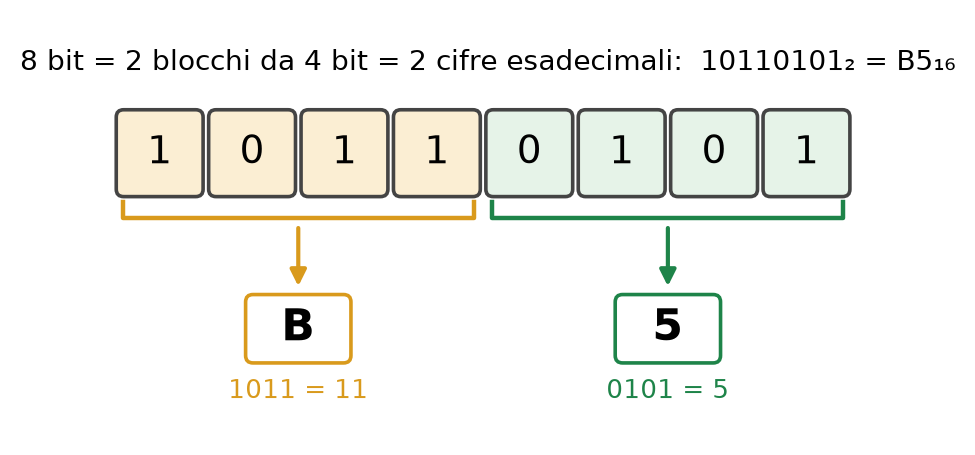
Da binario a esadecimale: blocchi da 4 bit, ciascuno diventa una cifra.
Esempio a 16 bit: il pattern 10100100110010002 si suddivide nei quattro blocchi 10102 (A), 01002 (4), 11002 (C) e 10002 (8), riducendosi alla forma sintetica A4C816.
Da Esadecimale a Binario: si esegue il procedimento inverso, sostituendo ogni singola cifra esadecimale con la sua precisa sequenza di 4 bit.
Esempio: il simbolo 0 diventa 0000, la cifra 1 diventa 0001 e la lettera F diventa 1111.
Utilizzi e Applicazioni Pratiche
Rappresentazione dei Colori (RGB): nei sistemi digitali, un colore in formato RGB a 24 bit è composto da 3 canali da 8 bit ciascuno (Rosso, Verde e Blu). Anziché scrivere una confusa sequenza di 24 cifre binarie, il colore viene abbreviato con sole 6 cifre esadecimali (2 cifre per canale).
Indirizzi di Memoria: la memoria principale è organizzata in celle con indirizzi numerici univoci. L'esadecimale è lo standard per esprimere tali indirizzi in modo compatto.
Notazione nei Linguaggi di Programmazione: nei linguaggi come Python, i valori esadecimali vengono identificati prefissandoli con la notazione 0x (ad esempio 0xFF, che corrisponde al valore decimale 255).
3. Memoria Permanente e Supporti di Memorizzazione di Massa
Mentre la memoria principale (RAM) è volatile e richiede un flusso costante di corrente per mantenere attivi i segnali nei flip-flop, i supporti di memorizzazione di massa nascono per garantire la conservazione permanente (non volatile) dei dati nel tempo, consentendone il recupero anche a computer spento. Per questo si parla anche di memoria secondaria, caratterizzata da non volatilità, alta capacità e costi contenuti.
In parole povere: la memoria secondaria (o di massa) è l'archivio del computer: dischi, chiavette, SSD. Costa poco, contiene tanto e non dimentica quando spegni, a differenza della RAM che è come il banco di lavoro che si svuota a fine giornata.
Evoluzione dei supporti storici: Nastri e Schede Perforate
Nei primi decenni dell'informatica, i dati venivano memorizzati su schede perforate e successivamente su nastri magnetici.
Svantaggio principale (Accesso Sequenziale): Per recuperare un'informazione specifica occorre riavvolgere o scorrere l'intero nastro fino al punto desiderato. Questo processo comporta lunghi tempi di attesa e un costante logorio meccanico dovuto allo sfregamento del nastro sui supporti di lettura.
In parole povere: accesso sequenziale vuol dire che per arrivare a un dato devi passare per tutti quelli che lo precedono, come cercare una canzone su una cassetta riavvolgendo il nastro. L'accesso diretto, invece, permette di saltare subito al punto giusto, come scegliere una traccia su un CD.
Dischi Magnetici (Hard Disk Drive - HDD)
I dischi magnetici hanno rappresentato un'evoluzione fondamentale, introducendo la possibilità di effettuare un accesso diretto e mirato ai dati.
Struttura fisica: Il dispositivo è composto da uno o più piatti magnetici in rapida rotazione. La superficie di ogni piatto è organizzata in tracce concentriche (e non a spirale), ciascuna suddivisa in archi definiti settori. L'insieme delle tracce poste alla stessa distanza dal centro su più piatti sovrapposti forma un cilindro. Ogni settore contiene una quantità fissa di dati (tipicamente da 512 byte a pochi KB).
In parole povere: immagina un disco di vinile: le tracce sono i cerchi concentrici, i settori sono le fette di torta in cui ogni cerchio viene tagliato (ogni fetta contiene una quantità fissa di dati), il cilindro è la pila delle tracce alla stessa distanza dal centro nei vari piatti, come una colonna di anelli uguali impilati.
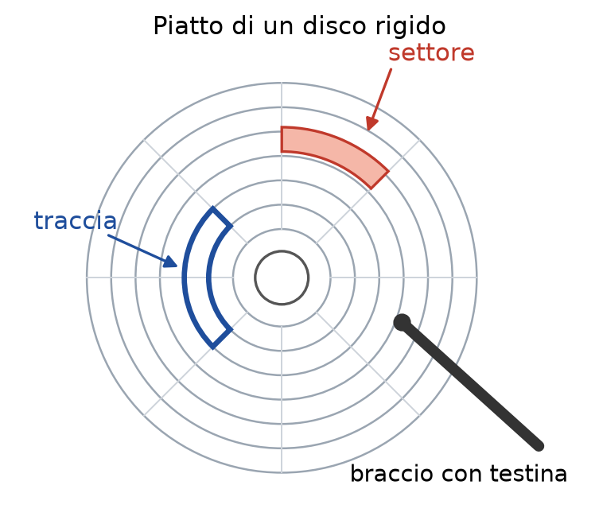
Piatto di un disco rigido: tracce concentriche divise in settori, e la testina.
Zoned-Bit Recording: per ottimizzare lo spazio nei dischi ad alta capacità, le tracce esterne (più lunghe) contengono un numero maggiore di settori rispetto a quelle interne.
In parole povere: le tracce esterne sono più lunghe di quelle interne, quindi ci stanno più dati. Con lo zoned-bit recording il disco sfrutta questa maggior lunghezza dando più settori alle tracce esterne, invece di sprecare spazio con lo stesso numero ovunque. È come mettere più posti a sedere nelle file più larghe di un teatro.
Assenza di usura del dato: La testina di lettura/scrittura "fluttua" a piccolissima distanza dalla superficie senza mai toccarla fisicamente. Ciò consente di smagnetizzare e rimagnetizzare i dati un numero illimitato di volte senza che la superficie si usuri.
Protezione dai guasti: per evitare guasti catastrofici (head crash) causati dalla polvere, i dischi rigidi sono sigillati in fabbrica.
Tempi di prestazione:
Tempo di ricerca (Seek Time): Il tempo necessario alla testina per posizionarsi sulla traccia corretta.
In parole povere: il seek time è il tempo che la testina impiega a spostarsi sulla traccia giusta, come il braccio del giradischi che si posa sul solco voluto.
Latenza di rotazione (Latency): Il tempo impiegato dal disco per far ruotare il settore desiderato sotto la testina.
In parole povere: la latenza è l'attesa, dopo che la testina è arrivata sulla traccia, perché il disco giri finché il settore voluto le passa sotto. Pensa di aspettare che passi il tuo posto su una giostra che gira.
Tempo di accesso (Access Time): La somma di tempo di ricerca e latenza.
In parole povere: è il tempo totale per raggiungere un dato: prima sposti la testina, poi aspetti che il disco giri. Quindi tempo di ricerca più latenza.
Velocità di trasferimento (Transfer Rate): la velocità con cui i dati vengono trasferiti da o verso il disco.
In parole povere: è la velocità con cui, una volta trovato il dato, questo scorre dal disco al computer (o viceversa), un po' come la portata di un rubinetto una volta aperto.
Supporti Ottici (CD, DVD, Blu-Ray)
Sviluppati a partire dagli anni '80, i dischi ottici utilizzano un raggio laser per rilevare le variazioni di riflettenza incise sul supporto.
Geometria a spirale: A differenza degli HDD, i dati nei CD e DVD sono disposti lungo un'unica traccia a spirale che parte dal centro e procede verso l'esterno. Questa struttura li rende ideali per la riproduzione di flussi continui di dati (come brani audio o video), ma meno efficienti per l'accesso casuale frequente.
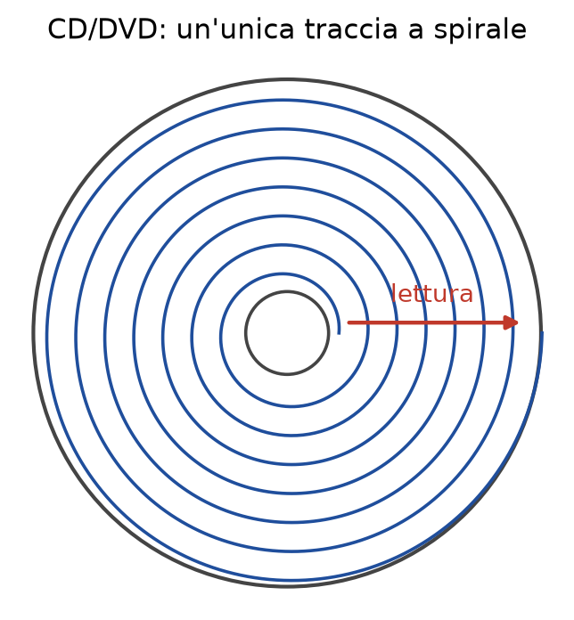
In un CD i dati stanno su un'unica traccia a spirale.
Evoluzione tecnologica:
CD: Strato singolo, con capacità tipica attorno ai 600–700 MB.
DVD: Capacità nell'ordine dei Gigabyte, ottenuta sovrapponendo più strati semitrasparenti letti da laser con messe a fuoco differenti.
Blu-ray (BD): Sfrutta un laser nella frequenza del blu-violetto (lunghezza d'onda inferiore e maggiore energia) che permette una precisione di focalizzazione molto più elevata e capacità oltre cinque volte quella di un DVD (25 GB a strato singolo, fino a 50 GB a doppio strato).
Memorie Flash e SSD (Solid-State Drive)
Rappresentano la tecnologia di memorizzazione di massa più moderna, completamente priva di parti meccaniche in movimento. Gli SSD (Solid-State Drive) sono destinati a rimpiazzare gli HDD nei computer.
Principio di funzionamento: I dati vengono memorizzati applicando impulsi elettrici che "intrappolano" gli elettroni all'interno di microscopiche camere di diossido di silicio. Gli elettroni rimangono catturati per anni anche in assenza di alimentazione elettrica.
Vantaggi: Accesso ai dati quasi istantaneo (velocità elettronica), assoluta silenziosità e resistenza agli urti o alle vibrazioni fisiche.
Limitazione ed erosione: A differenza degli HDD, le memorie Flash richiedono la cancellazione a grandi blocchi e ogni ciclo di scrittura/cancellazione provoca un microscopico degrado fisico delle trappole di silicio.
La tecnica del Wear-Leveling: Per prevenire il guasto di celle riscritte troppo di frequente (ad esempio per l'aggiornamento continuo di piccole informazioni), i controller degli SSD distribuiscono uniformemente i dati ridistribuendoli su blocchi di memoria differenti, prolungando così la vita operativa del dispositivo.
In parole povere: se scrivi sempre sulle stesse celle quelle si consumano prima delle altre. Il wear-leveling è la tattica del controller dell'SSD di far girare le scritture su tutte le celle, come ruotare le gomme dell'auto per farle consumare in modo uniforme.
Schede di memoria: la tecnologia Flash è impiegata anche nelle schede SD, SDHC (fino a 32 GB) e SDXC (fino a oltre 1 TB), ampiamente usate in smartphone e fotocamere.
4. Rappresentazione dei Dati: Testo e Colori (RGB)
Per consentire a un calcolatore di elaborare informazioni del mondo reale — come parole e immagini — occorre codificare ciascuna tipologia di dato sotto forma di sequenze o pattern di bit 0 e 1.
Rappresentazione del Testo (ASCII, ISO e Unicode/UTF-8)
I testi vengono memorizzati convertendo ciascun simbolo (lettere, cifre numeriche, segni di punteggiatura e caratteri di controllo) in una specifica sequenza binaria.
Codice ASCII: negli anni '40 e '50 esistevano molti codici tra loro incompatibili; per standardizzare la comunicazione tra macchine diverse l'ANSI (American National Standards Institute) adottò il codice ASCII (American Standard Code for Information Interchange), che utilizzava originariamente sequenze di 7 bit, capaci di rappresentare 27 = 128 simboli dell'alfabeto inglese. Per integrarsi nei moderni calcolatori organizzati a byte, è stato successivamente portato a 8 bit (aggiungendo uno 0 iniziale). Questo ha reso disponibili ulteriori 128 combinazioni per estensioni regionali.
In parole povere: ASCII è una tabella che associa a ogni lettera, cifra o segno un numero a 7 bit (poi esteso a 8), come un codice Morse in cui ogni carattere ha la sua sequenza. Esempio: la lettera A è sempre lo stesso pattern di bit, in tutti i computer che usano l'ASCII.
Estensioni ISO e i loro limiti: L'estensione dell'ASCII tramite standard ISO ha permesso di includere simboli dei linguaggi europei occidentali (come vocali accentate o simboli monetari). Tuttavia, 256 combinazioni totali sono del tutto insufficienti per coprire alfabeti complessi o ideogrammi orientali (come il cinese o il giapponese) e non consentivano di gestire documenti multilingue.
Unicode e UTF-8: Per superare questi vincoli è stato creato lo standard Unicode, che assegna un codice univoco a ogni simbolo di tutti gli alfabeti del mondo utilizzando fino a 21 bit. Tramite la codifica UTF-8, i caratteri ASCII classici mantengono la compatibilità occupando un singolo byte (8 bit), mentre i caratteri di altri alfabeti utilizzano da 16 a 32 bit a seconda della rarità del simbolo.
In parole povere: Unicode è una tabella enorme che dà un numero a ogni simbolo di ogni lingua del mondo (anche cinese ed emoji). UTF-8 è il modo di scrivere questi numeri in byte: le lettere inglesi occupano un solo byte, i simboli più rari ne occupano di più, così non si spreca spazio.
Rappresentazione dei Colori (Il Modello RGB)
La digitalizzazione delle immagini grafiche si basa sulla suddivisione della figura in una griglia di piccoli punti chiamati pixel (picture element).
In parole povere: un'immagine digitale è come un mosaico: i pixel sono le tessere minuscole, ciascuna di un solo colore. Messe una accanto all'altra formano la figura.
I tre canali cromatici (RGB): Per rappresentare le immagini a colori si sfrutta la sintesi additiva della luce, dividendo la tonalità di ogni pixel nei tre colori primari: Red, Green e Blue.
In parole povere: ogni colore si ottiene mescolando luce rossa, verde e blu in quantità diverse, come i tre faretti di un palcoscenico. Per ogni faretto si usa un byte, cioè un numero da 0 (spento) a 255 (al massimo): 0,0,0 è nero, 255,255,255 è bianco.
Occupazione di memoria (24 bit / 3 Byte per pixel): Per ciascuno dei tre canali cromatici viene dedicato 1 byte (8 bit), il che permette di impostare l'intensità di ciascun colore primario su una scala di valori compresi tra 0 e 255. Di conseguenza, la rappresentazione completa di un singolo pixel a colori richiede complessivamente 3 byte (24 bit) di memoria, offrendo oltre 16,7 milioni di combinazioni di colore.
Uso dell'Esadecimale per i Colori: Trascrivere o gestire una stringa di 24 bit in binario per definire un singolo colore risulterebbe estremamente scomodo e soggetto a errori. Per questo motivo, nei linguaggi di programmazione e nel web si convertono i 24 bit in 6 cifre esadecimali (2 cifre per il Rosso, 2 per il Verde, 2 per il Blu). Ad esempio, una sfumatura con prevalenza di rosso e poco verde o blu può essere espressa in modo compatto tramite una coordinata esadecimale a 6 caratteri.
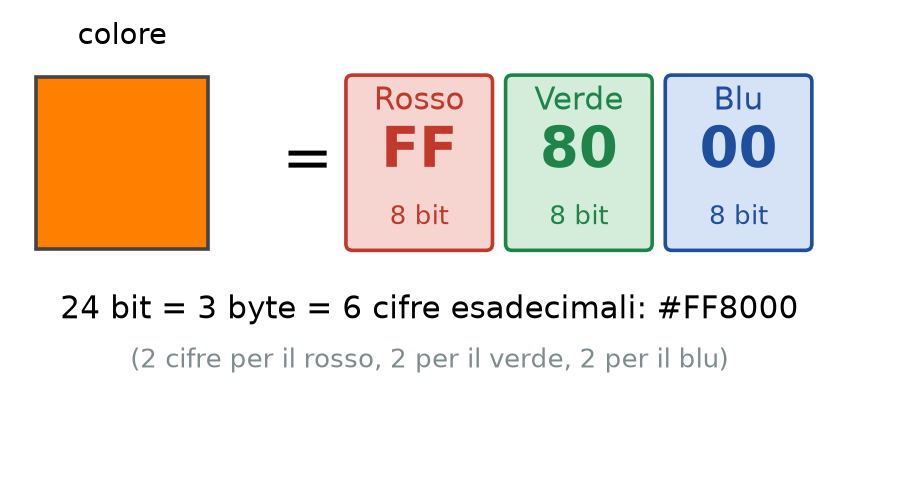
Un colore RGB a 24 bit scritto con 6 cifre esadecimali.
5. Architettura e Memorizzazione dei Bit
Operazioni Booleane di base
Per manipolare e conservare i bit all'interno dei circuiti, si adotta la convenzione logica per cui il bit 0 rappresenta il valore falso (false) e il bit 1 rappresenta il valore vero (true). Le operazioni matematiche che operano su questi valori di verità sono dette operazioni booleane, formalizzate dal matematico George Boole:
In parole povere: un'operazione booleana è un'operazione tra valori che possono essere solo vero o falso (1 o 0), come le domande a cui si risponde solo sì o no. Il risultato è a sua volta un sì o un no.
AND: produce un output pari a 1 soltanto quando entrambi gli ingressi sono pari a 1; in tutti gli altri casi l'uscita è 0.
In parole povere: AND dà 1 solo se tutti e due gli ingressi sono 1. Come due interruttori in serie: la lampadina si accende solo se li chiudi entrambi.
OR: produce un output pari a 1 quando almeno uno dei due ingressi è pari a 1; restituisce 0 solo se entrambi gli input sono 0.
In parole povere: OR dà 1 se almeno uno dei due ingressi è 1. Come due interruttori in parallelo: basta chiuderne uno perché la lampadina si accenda.
XOR (Exclusive OR): produce un output pari a 1 quando gli ingressi sono diversi tra loro (ovvero uno è 1 e l'altro è 0), mentre restituisce 0 se gli ingressi sono identici.
In parole povere: XOR dà 1 quando i due ingressi sono diversi. Come i due interruttori di una scala: premendone uno si accende, premendo anche l'altro si spegne di nuovo.
NOT: è un'operazione unaria (ha un solo ingresso) e inverte il valore del bit in input, trasformando 1 in 0 e 0 in 1.
In parole povere: NOT è il bottone del contrario: se entra 1 esce 0, se entra 0 esce 1. Ha un solo ingresso.
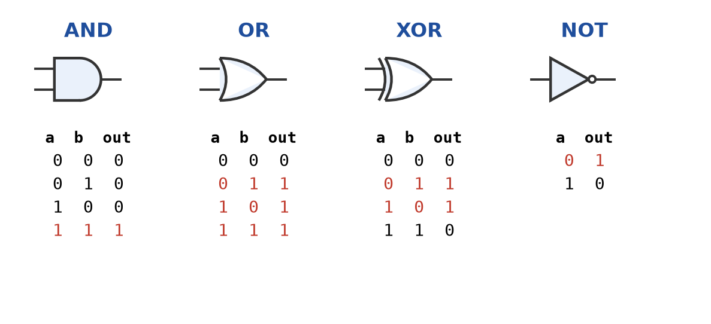
Le porte logiche AND, OR, XOR e NOT con le loro tavole di verità.
Porte Logiche e tecnologia VLSI
L'hardware esegue fisicamente queste operazioni tramite le porte logiche (gates), che sono piccoli circuiti elettronici in cui le cifre 0 e 1 corrispondono a differenti livelli di tensione elettrica.
In parole povere: una porta logica è una piccola scatola elettronica che calcola un'operazione booleana: i fili in ingresso portano tensione alta o bassa (cioè 1 o 0) e ne esce uno solo con il risultato. Con tante porte collegate si costruisce tutto il computer.
Composizione e Astrazione: le porte logiche rappresentano i blocchi costruttivi fondamentali dell'architettura hardware. Collegando opportunamente più porte logiche tra loro si realizzano i flip-flop, ovvero i circuiti sequenziali elementari capaci di memorizzare un singolo bit attraverso impulsi di controllo.
Integrazione VLSI: tramite la tecnologia VLSI (Very Large-Scale Integration), milioni o miliardi di porte logiche e flip-flop vengono miniaturizzati ed edificati su un unico wafer di silicio (chip), permettendo di realizzare circuiti complessi gestibili dai progettisti come componenti astratti.
La Memoria Principale (RAM)
Organizzazione della memoria, byte e celle
La memoria principale (o memoria centrale) di un computer è costituita da una vasta collezione di circuiti (come i flip-flop) destinati a contenere le informazioni in esecuzione.
In parole povere: la memoria principale è il blocco di appunti su cui il computer lavora mentre i programmi girano: è fatta di tantissimi piccoli circuiti che ricordano un bit ciascuno.
Struttura a celle e Byte: la memoria è suddivisa in unità di gestione denominate celle, ciascuna delle quali ha una capacità tipica di 8 bit, definita byte.
In parole povere: la memoria è come un condominio con tante caselle uguali: ogni cella è una casella e ognuna contiene 8 bit. Un gruppo di 8 bit si chiama byte; è la porzione minima che il computer sposta o legge.
MSB e LSB: all'interno di una cella da un byte, i bit sono ordinati idealmente da sinistra a destra. Il bit all'estremità sinistra è chiamato high-order bit o most significant bit (MSB), poiché rappresenta la cifra di peso maggiore in un'interpretazione numerica. Il bit all'estremità destra è detto low-order bit o least significant bit (LSB).
In parole povere: in un numero scritto in cifre, la cifra più a sinistra conta di più (nelle migliaia, il 2 di 2000 pesa più del 5 di 5). Allo stesso modo in un byte il bit più a sinistra, MSB, è quello che pesa di più e quello più a destra, LSB, è quello che pesa di meno.
Indirizzamento e Operazioni di lettura/scrittura
Per identificare e accedere alle singole celle, a ciascuna di esse viene assegnato un "nome" numerico univoco detto indirizzo.
In parole povere: l'indirizzo è il numero civico di una cella: serve a dire al computer in quale cella andare a leggere o scrivere, come il numero di una casella postale.
Ordinamento sequenziale: gli indirizzi partono da 0 e crescono in modo contiguo, creando una sequenza ordinata di celle. Sequenze di dati più lunghe di un singolo byte (come interi a 16, 32 o 64 bit) vengono memorizzate occupando celle adiacenti.
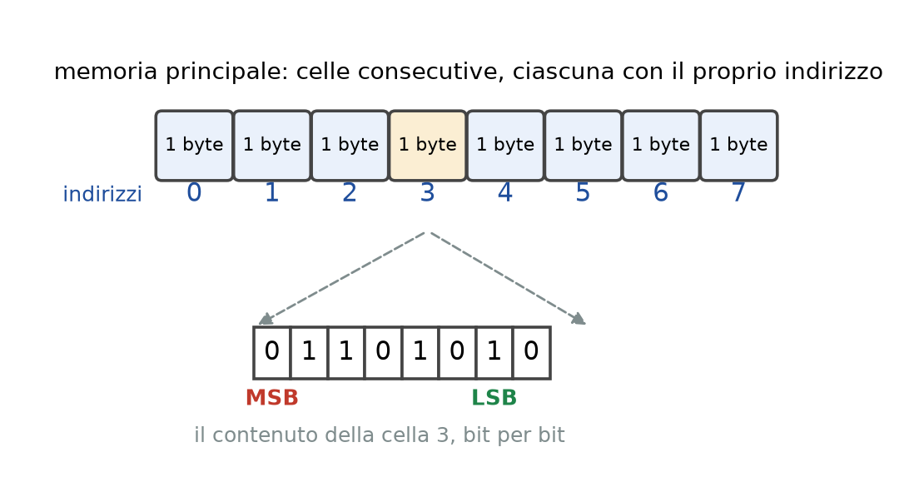
La memoria come sequenza di celle numerate; dentro la cella, il bit più significativo (MSB) a sinistra e il meno significativo (LSB) a destra.
Operazioni fondamentali: i circuiti esterni interagiscono con la memoria mediante due operazioni: la lettura (read operation), con cui si richiede il contenuto presente a un determinato indirizzo, e la scrittura (write operation), con cui si sovrascrive un nuovo pattern di bit nella cella specificata.
In parole povere: leggere è guardare cosa c'è scritto nella cella con un certo indirizzo, senza cambiarlo; scrivere è cancellare il contenuto della cella e metterci un valore nuovo, come cambiare il biglietto dentro una cassetta.
RAM e DRAM: poiché l'architettura consente di accedere a qualsiasi cella in modo indipendente e nello stesso intervallo di tempo, la memoria principale è detta RAM (Random Access Memory). Nelle moderne macchine, la RAM è realizzata come memoria dinamica (DRAM o SDRAM), dove i bit sono memorizzati sotto forma di microscopiche cariche elettriche che tendono a dissiparsi rapidamente e richiedono un circuito di refresh continuo per ripristinare la carica più volte al secondo.
In parole povere: RAM vuol dire memoria a cui si accede in un punto qualsiasi, senza dover scorrere gli altri, e con la stessa velocità per tutti: come aprire direttamente la casella che vuoi senza passare dalle precedenti. La DRAM tiene i bit come cariche elettriche piccolissime che si scaricano, quindi bisogna ricaricarle di continuo (refresh).
Unità di misura della capacità di memoria
Storicamente, le dimensioni della memoria sono progettate in potenze di 2. Di conseguenza, 1 Kilobyte (KB) corrisponde a 210 = 1024 byte. L'uso dei prefissi metrici (Kilo, Mega, Giga, Tera) nell'ambito informatico indica tradizionalmente potenze di 2 (1 MB = 1024 KB, 1 GB = 1024 MB), a differenza di altri settori scientifici dove indicano potenze di 1000.
In parole povere: un kilobyte in informatica non è 1000 byte ma 1024, perché si lavora con potenze di 2. Sono due modi di contare: 1024 è il numero tondo per i computer, 1000 quello tondo per noi.
6. Codifica E Rappresentazione Dei Dati
File di Testo Semplici vs Documenti di Word Processing
È fondamentale distinguere tra due categorie di file contenenti testo:
Text File (File di testo puro): costituiti esclusivamente dalla sequenza di caratteri codificati in ASCII o Unicode, gestibili tramite editor di testo semplice (come Notepad).
In parole povere: un file di testo puro contiene solo i caratteri, come un foglio scritto a macchina senza grassetti né colori. Lo apri con qualunque editor, anche il più semplice.
Documenti di Word Processing: prodotti da programmi come Microsoft Word, contengono oltre al testo una serie di codici proprietari complessi per memorizzare la formattazione (font, allineamenti, margini, stili).
Rappresentazione dei Valori Numerici (ASCII vs Notazione Binaria)
Memorizzare i numeri sotto forma di caratteri ASCII o Unicode è estremamente inefficiente dal punto di vista dello spazio di archiviazione.
Incapacità della codifica a caratteri: per salvare il numero intero 25 come testo servono due byte (16 bit), un byte per il carattere '2' e un byte per il carattere '5'. Con 16 bit espressi in ASCII il valore massimo rappresentabile è soltanto 99.
Efficienza della Notazione Binaria: codificando il valore numerico direttamente in notazione binaria, gli stessi 16 bit consentono di rappresentare qualsiasi numero intero compreso tra 0 e 65 535. Per questo motivo, nei calcolatori le quantità numeriche vengono sempre memorizzate tramite rappresentazioni binarie dedicate.
Rappresentazione delle Immagini (Bitmap e Grafica Vettoriale)
La digitalizzazione delle immagini visive richiede la trasformazione delle informazioni spaziali e cromatiche in sequenze di bit. Esistono due approcci fondamentali:
Grafica Bitmap (Raster)
Nelle immagini bitmap, la figura viene suddivisa in una griglia regolare di piccoli punti detti pixel (picture elements). L'immagine viene memorizzata registrando in sequenza la codifica cromatico-luminosa di ciascun pixel.
In parole povere: un'immagine bitmap è come un disegno a quadretti: la figura è divisa in una griglia di puntini (pixel) e si salva il colore di ciascun quadretto, uno dopo l'altro.
Immagini in Bianco e Nero: ogni pixel è rappresentato da un singolo bit (0 per il bianco, 1 per il nero), tecnica adottata ad esempio dai fax.
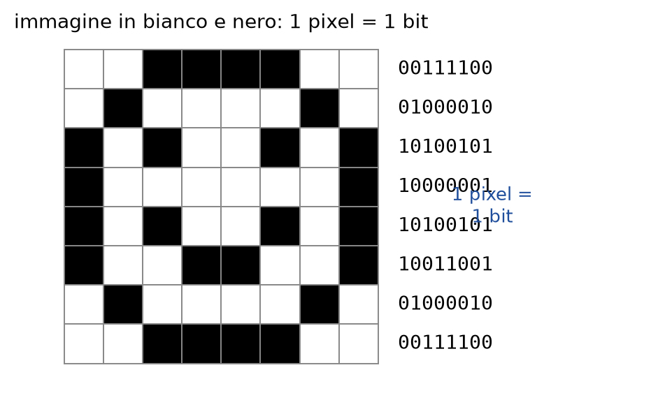
Immagine in bianco e nero: ogni pixel è un bit.
Scala di Grigi: ciascun pixel occupa tipicamente 1 byte (8 bit), consentendo di distinguere 256 diverse sfumature di grigio.
Immagini a Colori (RGB): ogni pixel richiede 3 byte (24 bit), con oltre 16,7 milioni di colori; il modello è descritto nel capitolo 4.
Luminanza e Crominanza: un'alternativa al modello RGB consiste nello scomporre il pixel in una componente di Luminanza (luminosità o quantità di luce bianca) e due componenti di Crominanza (differenza cromatica del blu e del rosso). Nata per la trasmissione della TV a colori compatibile con i televisori in bianco e nero, questa scomposizione è sfruttata dai moderni algoritmi di compressione.
In parole povere: invece di dire quanto rosso, verde e blu c'è, si dice quanto è chiaro il punto (luminanza) e di che tinta è (crominanza). È come una foto in bianco e nero (la luminanza) a cui si aggiunge la tinta sopra. Serve soprattutto per comprimere meglio.
Limiti della Bitmap e Grafica Vettoriale
Il problema del ridimensionamento (Digital Zoom): le immagini bitmap non si prestano a ingrandimenti arbitrari; all'aumentare delle dimensioni i pixel diventano visibili rendendo l'immagine sgranata ("zoom digitale").
Grafica Vettoriale: evita il problema del ridimensionamento descrivendo l'immagine come una collezione di strutture geometriche (linee, poligoni, curve) definite mediante equazioni analitiche. Sarà poi il dispositivo di visualizzazione a tracciare la figura al massimo della risoluzione disponibile.
In parole povere: un'immagine vettoriale non memorizza i puntini, ma le istruzioni per disegnarla (tira una linea da qui a là, disegna un cerchio così). Il dispositivo la ridisegna alla grandezza che vuoi, quindi non diventa mai sgranata.
Applicazioni della Grafica Vettoriale: è lo standard utilizzato per i font scalabili dei sistemi di scrittura come TrueType (sviluppato da Microsoft e Apple) e PostScript (sviluppato da Adobe), per i disegni tecnici nei software CAD e nei programmi di grafica vettoriale, dove le forme rimangono modificabili e ridimensionabili all'infinito senza alcuna perdita di nitidezza.
Rappresentazione del Suono (Campionamento Audio e MIDI)
La digitalizzazione dei segnali acustici analogici (onde sonore) viene gestita mediante due strategie completamente differenti:
Campionamento Audio Digitale
Il metodo generale consiste nel misurare l'ampiezza dell'onda sonora a intervalli di tempo regolari (operazione detta campionamento) e registrare la sequenza dei valori numerici ottenuti.
In parole povere: il campionamento consiste nel misurare il volume del suono a intervalli regolarissimi, come fare tante fotografie ravvicinate, e salvare i numeri trovati. Più misure al secondo fai, più il suono ricostruito è fedele.
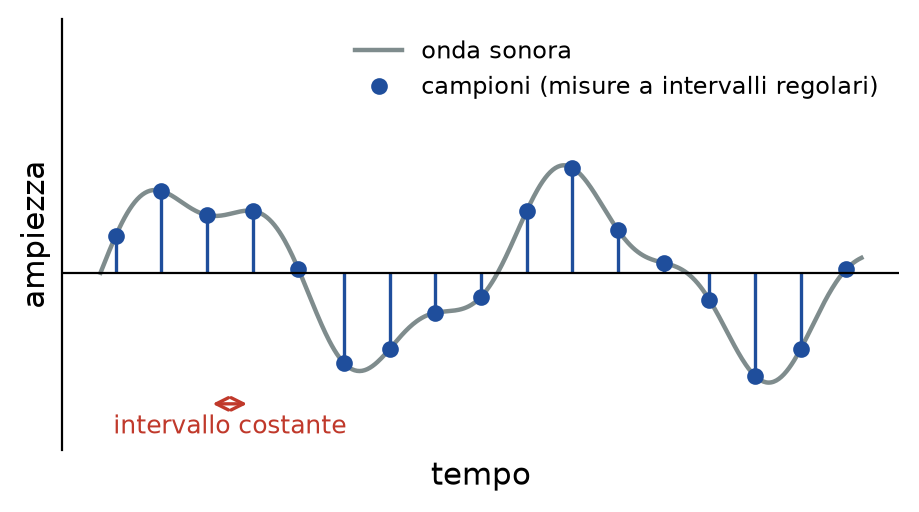
Campionamento: si misura l'ampiezza dell'onda a intervalli regolari.
Frequenza di Campionamento e Qualità:
Telefonia vocale: utilizza una frequenza di 8.000 campioni al secondo (8 kHz), sufficiente per rendere intelligibile la voce umana.
CD Audio ad alta fedeltà: richiede una frequenza di 44.100 campioni al secondo (44,1 kHz), con ciascun campione memorizzato a 16 bit per canale (32 bit per registrazioni stereofoniche). Un secondo di musica stereo richiede quindi oltre 1 milione di bit.
Sintesi Musicale e Standard MIDI
Per evitare l'enorme occupazione di memoria richiesta dal campionamento dell'onda sonora grezza, lo standard MIDI (Musical Instrument Digital Interface) adotta un approccio basato su istruzioni esecutive per sintetizzatori musicali.
In parole povere: MIDI non salva il suono ma lo spartito: dice quale strumento suona, quale nota, quanto forte e per quanto tempo. È come mandare un foglio di musica a un pianista invece di una registrazione: occupa pochissimo, ma il suono finale dipende da chi suona.
Principio di funzionamento: anziché registrare il suono prodotto, il formato MIDI memorizza lo "spartito digitale", ossia le informazioni su quale strumento deve suonare, quale nota eseguire, con quale intensità e per quale durata.
Efficienza di memorizzazione: una nota di clarinetto eseguita per due secondi richiede più di 2 milioni di bit se registrata tramite campionamento a 44,1 kHz, mentre in formato MIDI viene codificata in appena 3 byte. Il file risulta minuscolo, anche se la resa acustica finale dipende dalla qualità dei timbri del sintetizzatore che lo riproduce.
7. Il Sistema Numerico Binario e Aritmetica
Notazione Posizionale in Base 2
Nel sistema decimale (base 10) comune, ogni posizione all'interno di un numero corrisponde a una potenza di 10 (unità 100, decine 101, centinaia 102, e così via). Nel sistema binario (base 2), il principio è identico ma si utilizzano esclusivamente le due cifre 0 e 1, e ciascuna posizione verso sinistra possiede un peso pari al doppio di quella alla sua destra (potenze di 2).
In parole povere: nella notazione posizionale il valore di una cifra dipende da dove sta. In base 10 ogni posto vale dieci volte il precedente (unità, decine, centinaia); in base 2 ogni posto vale il doppio del precedente (1, 2, 4, 8...) e le cifre sono solo 0 e 1.
Pesi delle posizioni: partendo dalla cifra più a destra (peso 20 = 1), le posizioni successive verso sinistra rappresentano 21 = 2, 22 = 4, 23 = 8, 24 = 16, 25 = 32, e così via.
Valore assoluto di una sequenza: il valore decimale equivalente a una stringa binaria si ottiene moltiplicando ogni cifra per il peso della sua posizione e sommando i prodotti ottenuti. Poiché nel binario esistono solo 0 e 1, l'operazione si riduce semplicemente alla somma dei pesi corrispondenti alle posizioni occupate dal bit 1.
In parole povere: per sapere che numero è una sequenza di bit, guardi dove stanno gli 1 e sommi i pesi di quelle posizioni. Esempio: 101 vuol dire 4 più 1, cioè 5.
Conversioni tra Base 2 e Base 10
Conversione da Binario a Decimale
Per interpretare un valore espresso in notazione binaria, si scompone la sequenza sommando i valori delle potenze di 2 associate ai bit pari a 1.
Esempio: la sequenza binaria 100101 si calcola sommando:
1 × 25 = 32
0 × 24 = 0
0 × 23 = 0
1 × 22 = 4
0 × 21 = 0
1 × 20 = 1
Risultato: 32 + 4 + 1 = 37 in notazione decimale.
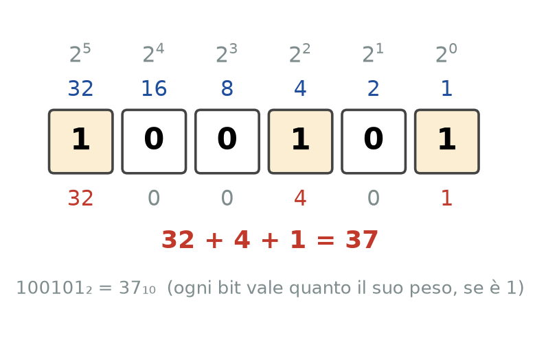
Da binario a decimale: ogni bit uguale a 1 contribuisce con il suo peso.
Conversione da Decimale a Binario (Algoritmo delle Divisioni Successive)
Per convertire un numero intero positivo dalla base 10 alla base 2 si applica l'algoritmo delle divisioni successive per 2.
Procedimento:
Si divide il numero decimale per 2, annotando il quoziente intero e il resto (che potrà essere solo 0 o 1).
Finché il quoziente ottenuto è diverso da zero, si continua a dividere l'ultimo quoziente per 2 e a registrare il relativo resto.
La rappresentazione binaria finale è data dalla sequenza dei resti letti in ordine inverso rispetto a come sono stati calcolati (dall'ultimo resto ottenuto fino al primo, ossia da destra verso sinistra).
Esempio (Conversione del numero 13):
13 ÷ 2 = 6 con resto 1 (bit meno significativo, LSB)
6 ÷ 2 = 3 con resto 0
3 ÷ 2 = 1 con resto 1
1 ÷ 2 = 0 con resto 1 (bit più significativo, MSB)
Raccogliendo i resti dal basso verso l'alto si ottiene la stringa binaria 1101.
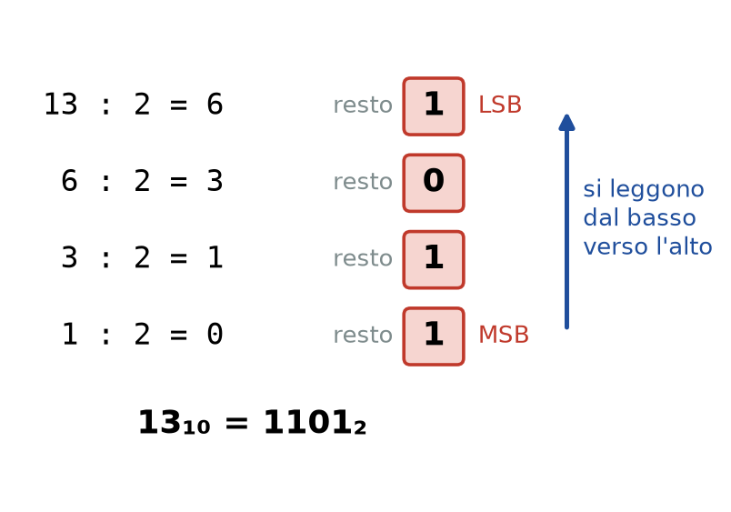
Da decimale a binario: i resti delle divisioni per 2, letti dal basso verso l'alto.
Aritmetica Binaria e Numeri Frazionari
Addizione Binaria
L'addizione in notazione binaria segue le stesse regole posizionali dell'addizione decimale (procedendo da destra verso sinistra e sommando colonna per colonna), ma impiega una tabella algebrica elementare basata su soli quattro casi fondamentali:
0 + 0 = 0
0 + 1 = 1
1 + 0 = 1
1 + 1 = 10 (scrivo 0 con riporto di 1 alla colonna di sinistra)
1 + 1 + 1 (somma di due bit più riporto precedente) = 11 (scrivo 1 con riporto di 1).
Esempio di somma: Sommiamo i numeri 11010 (26) e 11011 (27):
Colonna 1 (più a destra): 0 + 1 = 1
Colonna 2: 1 + 1 = 0 con riporto di 1
Colonna 3: 1 (riporto) + 0 + 0 = 1
Colonna 4: 1 + 1 = 0 con riporto di 1
Colonna 5: 1 (riporto) + 1 + 1 = 1 con riporto di 1
Ultimo riporto registrato a sinistra: 1 Risultato finale: 110101 (corrispondente al valore decimale 53 = 26 + 27).
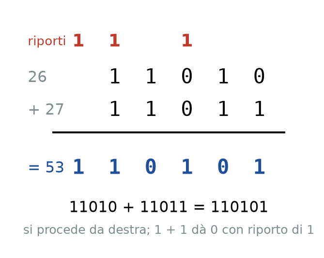
La somma binaria 11010 + 11011, con i riporti.
Rappresentazione dei Numeri Frazionari (Punto Radice)
Per estendere il sistema binario ai numeri reali o con virgola, si utilizza il punto radice (radix point, l'equivalente della virgola nel sistema decimale).
In parole povere: il punto radice è la virgola dei numeri binari: a sinistra le potenze di 2 normali (1, 2, 4), a destra le metà successive (un mezzo, un quarto, un ottavo). Esempio: 0.1 in binario vale un mezzo.
Pesi delle posizioni frazionarie: i bit a sinistra del punto radice rappresentano la parte intera (20, 21, 22 …). I bit situati a destra del punto radice rappresentano le potenze negative di 2:
Prima posizione a destra: 2−1 = 1/2 = 0,5
Seconda posizione a destra: 2−2 = 1/4 = 0,25
Terza posizione a destra: 2−3 = 1/8 = 0,125
Esempio: la sequenza frazionaria 101.101 corrisponde a:
Parte intera 101: 4 + 0 + 1 = 5
Parte frazionaria .101: 1 × (1/2) + 0 × (1/4) + 1 × (1/8) = 1/2 + 1/8 = 5/8 = 0,625
Valore totale: 5 + 5/8 = 5,625 (ossia 5 5/8).
Operazioni con i numeri frazionari: per sommare numeri binari contenenti il punto radice, si applica la regola classica dell'incolonnamento, allineando verticalmente i punti radice prima di eseguire l'addizione.
8. Rappresentazione degli interi (complemento a due e eccesso)
Notazione in Complemento a Due e Bit di Segno
Nei calcolatori moderni la rappresentazione dei numeri interi con segno non avviene tramite l'aggiunta di un semplice simbolo di polarità, bensì mediante la notazione in complemento a due (two's complement notation). La caratteristica fondamentale di questo sistema risiede nell'impiego di una lunghezza fissa di bit (fixed-length) per memorizzare qualsiasi valore. Sebbene l'hardware commerciale utilizzi tipicamente registri a 32 o 64 bit, la logica di funzionamento si esprime in modo identico anche su modelli didattici a 4 o 8 bit.
In parole povere: è un modo di scrivere i numeri positivi e negativi con un numero fisso di bit, in cui per cambiare segno basta una semplice regola (copia i bit fino al primo 1, poi inverti il resto). I positivi iniziano per 0, i negativi per 1. Il vantaggio è che per sommare e sottrarre l'hardware usa un solo circuito.
Il bit situato all'estrema sinistra della sequenza, noto come bit di segno (sign bit), determina la polarità del numero. Quando il bit di segno è pari a 0, la sequenza rappresenta un valore non negativo (positivo o zero). I valori positivi vengono codificati seguendo la notazione binaria pura a partire da 0 fino a raggiungere la combinazione con lo 0 iniziale seguito da tutti 1 (ad esempio, in un formato a 4 bit, da 0000 per lo 0 fino a 0111 per il +7). Al contrario, un bit di segno pari a 1 identifica un valore negativo.
In parole povere: il bit di segno è il primo bit a sinistra e dice se il numero è positivo o zero (0) oppure negativo (1). Con 4 bit, 0101 è +5 e 1011 è un numero negativo.
La sequenza composta da tutti 1 (1111) rappresenta il valore -1, e i numeri negativi successivi procedono a ritroso in binario fino a raggiungere la configurazione con un 1 seguito da tutti 0 (1000, che equivale a -8). Poiché lo zero viene conteggiato nell'intervallo non negativo, un sistema a n bit genera un intervallo asimmetrico compreso tra -2n−1 e +2n−1 - 1.
Per convertire un valore positivo nel suo corrispondente opposto negativo (o viceversa) si applica l'algoritmo copia e complementa (copy and complement procedure). Questo procedimento evita calcoli aritmetici complessi analizzando la sequenza da destra verso sinistra (dal bit meno significativo verso quello più significativo):
Si ricopiano esattamente tutti i bit incontrati (compresi eventuali zeri) fino a includere il primo bit 1.
Da quel punto in poi, tutti i bit rimanenti a sinistra vengono complementati (ovvero invertiti, trasformando ogni 0 in 1 e ogni 1 in 0).
A titolo di esempio, se vogliamo trovare la rappresentazione a 4 bit del numero -6, si parte dalla codifica del +6, pari a 0110. Esaminando la stringa da destra, il primo 0 e il primo 1 vengono ricopiati inalterati (producendo la parte finale 10); il bit successivo 1 viene convertito in 0 e lo 0 di segno diventa 1, ottenendo la configurazione finale 1010.
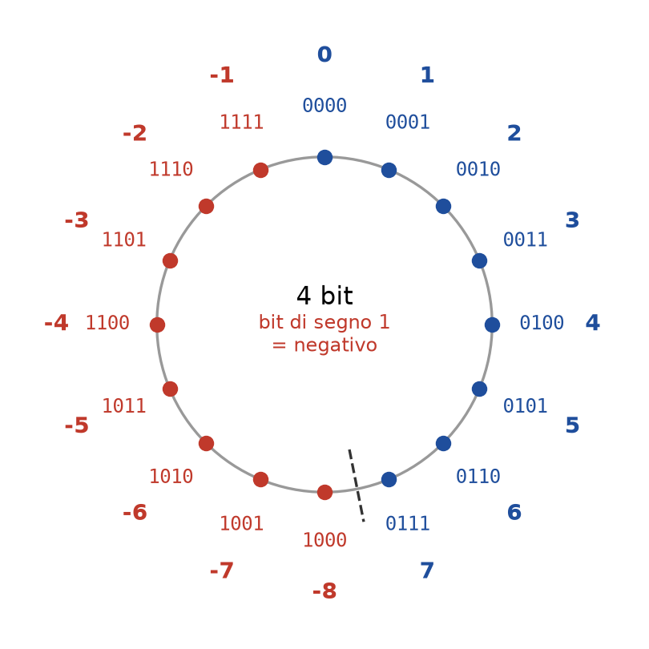
Complemento a due su 4 bit: i numeri con bit di segno 1 sono negativi.
Aritmetica e Sottrazione in Complemento a Due
Il motivo principale dell'adozione universale del complemento a due risiede nell'estrema semplificazione dei circuiti elettronici della CPU. A differenza dell'aritmetica umana, che richiede regole e moduli separati per addizioni e sottrazioni, un calcolatore che adotta il complemento a due esegue qualsiasi operazione algebrica utilizzando un unico algoritmo di addizione binaria.
Nelle somme tra numeri in complemento a due, tutte le stringhe operative e il risultato finale mantengono la medesima lunghezza fissa. Qualsiasi bit di riporto (carry) che trabocchi al di fuori dell'ultima colonna di sinistra deve essere semplicemente ignorato e troncato dall'hardware.
L'operazione di sottrazione A - B viene quindi convertita internamente nella somma A + (-B). Quando la macchina deve eseguire una sottrazione, genera prima l'opposto del secondo termine mediante il circuito di inversione (complemento) e poi inoltra i dati all'addizionatore standard.
Considerando ad esempio la sottrazione 7 - 5 in un sistema a 4 bit, il minuendo +7 equivale alla stringa 0111. Il sottrando +5 (0101) viene convertito nel suo opposto -5 (1011). Eseguendo la somma binaria tra 0111 e 1011, si ottiene la sequenza a 5 bit 10010. Troncando il quinto bit di riporto a sinistra (1), la macchina trattiene la stringa a 4 bit 0010, che corrisponde esattamente al risultato corretto +2 in notazione decimale.
Il Problema dell'Overflow e la Notazione in Eccesso
Trattandosi di una rappresentazione su un numero finito di bit, l'intervallo di valori rappresentabili è limitato. Il fenomeno dell'overflow (o trabocco) si verifica quando un'operazione aritmetica produce un risultato numerico che eccede le capacità fisiche della parola di memoria, uscendo dai limiti ammessi dal sistema.
In parole povere: l'overflow succede quando il risultato non ci sta nei bit a disposizione, come cercare di scrivere 100 su un contatore a due cifre: il numero esce dalla scala e il calcolo dà un valore sbagliato. Con 4 bit il massimo è 7, quindi 5 più 4 non ci sta.
L'hardware rileva automaticamente l'insorgere dell'overflow monitorando il bit di segno del risultato:
Se la somma di due valori positivi restituisce una sequenza con bit di segno 1 (negativo), si è verificato un errore di overflow.
Se la somma di due valori negativi genera un risultato con bit di segno 0 (positivo), si è verificato un overflow.
La somma di due numeri con segno opposto non può mai provocare overflow.
In un sistema a 4 bit (il cui intervallo ammissibile va da -8 a +7), la somma 5 + 4 (0101 + 0100) produce infatti 1001, una sequenza che l'hardware interpreta erroneamente come -7. L'incapacità di gestire correttamente l'overflow può causare gravi malfunzionamenti nei sistemi software.
Un altro metodo ampiamente utilizzato per la memorizzazione degli interi con segno è la notazione in eccesso (excess notation). In questo sistema, le combinazioni di bit della lunghezza prescelta vengono elencate in ordine binario crescente. La combinazione situata circa a metà dell'elenco — la prima che comincia con il bit 1 (ad esempio 1000 in un sistema a 4 bit) — viene scelta per rappresentare il valore 0. Le combinazioni successive codificano i numeri positivi (+1, +2, +3 …), mentre le combinazioni precedenti rappresentano i valori negativi (-1, -2, -3 …).
In parole povere: si mette lo zero a metà della lista dei numeri in ordine e si conta in su (positivi) e in giù (negativi) da lì. È come i piani di un palazzo in cui il piano zero non è il primo: i piani sotto sono i negativi e quelli sopra i positivi.
I sistemi in eccesso vengono denominati in base al valore decimale dello "zero" binario. Un formato a 4 bit con lo zero rappresentato da 1000 (che in binario puro varrebbe 8) è chiamato Excess-8, mentre un formato a 3 bit con lo zero posizionato su 100 è detto Excess-4.
In parole povere: il nome dice quanto vale lo zero se letto come binario normale: se lo zero è 1000, che in binario vale 8, il sistema si chiama Excess-8. Per ottenere il numero vero si toglie 8 al valore binario.
9. Rappresentazione dei numeri frazionari e virgola mobile
Struttura della Virgola Mobile (Floating-Point)
A differenza dei numeri interi, la memorizzazione di valori frazionari o reali (come 2,75 o 0,375) richiede di conservare non soltanto la sequenza binaria delle cifre significative, ma anche l'esatta posizione del punto radice (radix point). Nei sistemi digitali, questa esigenza viene risolta adottando la notazione in virgola mobile (floating-point notation), un metodo basato sul principio della notazione scientifica che permette di rappresentare sia numeri estremamente grandi sia quantità infinitamente piccole senza saturare lo spazio di memoria.
In parole povere: è la notazione scientifica del computer: invece di tenere il numero con la virgola fissa si salvano le cifre significative e dove va messa la virgola, come 3,5 per 10 alla sesta. Così il numero può essere gigantesco o minuscolo senza occupare molto spazio.
Per comprendere il funzionamento dell'architettura sottostante, si considera un modello didattico semplificato basato su un singolo byte (8 bit) di memoria, la cui struttura riflette la logica dei sistemi commerciali:
Bit di segno (Sign Bit - 1 bit): occupa la posizione più significativa all'estrema sinistra (MSB). Un valore pari a 0 indica che il numero è non negativo (positivo o zero), mentre il bit 1 identifica un numero negativo.
Campo Esponente (Exponent Field - 3 bit): posizionato immediatamente dopo il bit di segno, memorizza la potenza di 2 per cui moltiplicare la mantissa. Questo valore viene codificato in notazione in eccesso (nello specifico, Excess-4 per un campo a 3 bit), consentendo di gestire agevolmente sia esponenti positivi che negativi.
In parole povere: l'esponente dice di quanto spostare la virgola, cioè per quale potenza di 2 moltiplicare. Si salva in notazione in eccesso per avere anche esponenti negativi: è il numero che dice sposta a destra o sposta a sinistra.
Campo Mantissa (Mantissa Field - 4 bit): occupa le quattro posizioni rimanenti a destra e contiene le cifre significative del valore, assumendo implicitamente che il punto radice si trovi collocato all'estrema sinistra della mantissa stessa.
In parole povere: la mantissa è il blocco di cifre significative del numero, quelle che contano, senza dire dove sta la virgola. È come le cifre 3,14 in 3,14 per 10 alla seconda: l'esponente le sposta, ma le cifre sono quelle.
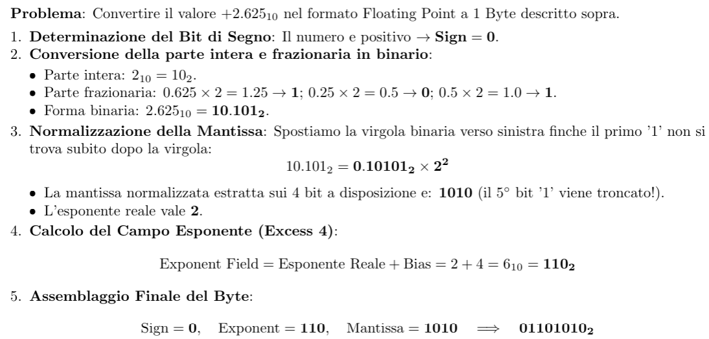
Normalizzazione, Conversioni e Standard Industriali
Nei calcolatori commerciali, l'esigenza di una maggiore precisione e dinamica numerica ha portato all'adozione degli standard internazionali IEEE 754:
Singola Precisione (Single Precision - 32 bit): impiega 1 bit di segno, 8 bit per l'esponente (espressi in notazione Excess-127) e 23 bit per la mantissa. Garantisce una precisione di circa 7 cifre decimali significative e copre un intervallo compreso tra 10−37 e 1038.
Doppia Precisione (Double Precision - 64 bit): impiega 1 bit di segno, 11 bit per l'esponente (in Excess-1023) e 52 bit per la mantissa, offrendo una precisione di circa 15 cifre decimali significative.
Errori di Troncamento e Proprietà dell'Aritmetica in Virgola Mobile
Nonostante l'ampio intervallo dinamico offerto dalla virgola mobile, la dimensione finita del campo mantissa impone un limite alla precisione. Quando un valore reale richiede più cifre binarie di quante la mantissa possa trattenere, le cifre eccedenti a destra vengono eliminate dall'hardware, generando un errore di troncamento (truncation error o round-off error). Un esempio si verifica tentando di memorizzare il valore 2 5/8 (10.101 in binario) nel formato ad 8 bit: la mantissa a 4 bit trattiene solo le prime quattro cifre 1010, smarrendo l'ultimo bit 1 (l'ultimo ottavo). Il circuito registra così il valore 01101010, equivalente a 2 1/2 anziché 2 5/8.
In parole povere: i bit della mantissa sono pochi: se il numero ne richiede di più, quelli in eccesso vengono buttati via. Come scrivere 3,14159 su un foglio che ha posto solo per 3,14: perdi qualcosa e il valore salvato è un po' diverso da quello vero.
Un'ulteriore sorgente di errore risiede negli sviluppi periodici non terminanti. Proprio come nel sistema decimale la frazione 1/3 genera una sequenza infinita di cifre, nel sistema binario molte frazioni decimali apparentemente semplici non possiedono una rappresentazione finita. Il valore decimale 1/10 (0,1), ad esempio, si trasforma in binario in una frazione periodica infinita che non può essere memorizzata con esattezza assoluta. Nei software finanziari o contabili, questo dettaglio può causare imprecisioni nell'accumulo di importi monetari espressi in dollari e centesimi; per evitare tali errori, si preferisce lavorare direttamente con numeri interi (esprimendo gli importi in centesimi) tramite la notazione in complemento a due.
Le imprecisioni introdotte dai troncamenti generano una conseguenza algebrica importante: l'addizione in virgola mobile non gode della proprietà associativa ((A + B) + C ≠ A + (B + C)). Quando si addiziona un numero molto grande a un numero molto piccolo, l'hardware trasla la mantissa del valore piccolo verso destra per allineare gli esponenti; se la differenza tra gli ordini di grandezza è marcata, le cifre del numero piccolo scivolano fuori dalla mantissa e vengono azzerate dall'hardware. Di conseguenza, l'operazione 2 1/2 + 1/8 + 1/8 eseguita nell'ordine da sinistra a destra produce il risultato errato 2 1/2, poiché sommando 2 1/2 a 1/8 si subisce un troncamento che ripristina la somma a 2 1/2. Invertendo invece l'ordine e sommando prima i due valori piccoli tra loro (1/8 + 1/8 = 1/4), e aggiungendo solo successivamente il risultato a 2 1/2, si ottiene la risposta esatta 2 3/4.
Questa caratteristica impone una regola fondamentale nell'analisi numerica: quando si devono sommare più valori espressi in virgola mobile, occorre sommare sempre per primi i numeri più piccoli, consentendo loro di accumularsi gradualmente fino a raggiungere una grandezza significativa prima dell'addizione con i numeri di ordine superiore.
10. Compressione Dei Dati
Tecniche Generiche di Compressione dei Dati
La compressione dei dati comprende l'insieme delle tecniche utilizzate per ridurre la dimensione dei file digitali conservando le informazioni sottostanti, consentendo di ottimizzare lo spazio di archiviazione e di velocizzare il trasferimento dei dati. Le velocità di trasmissione lungo i canali di comunicazione vengono comunemente misurate in bit per secondo (bps) e nei relativi multipli, quali Kbps (migliaia di bps), Mbps (milioni di bps) e Gbps (miliardi di bps).
In parole povere: comprimere un file vuol dire riscriverlo in modo più corto, sfruttando ripetizioni e cose ridondanti, per occupare meno spazio e viaggiare più in fretta in rete. Come riassumere un racconto o fare le valigie piegando bene i vestiti.
Tutti gli schemi di compressione si dividono in due grandi categorie concettuali:
Compressione Lossless (Senza Perdita): schemi che non comportano alcuna perdita di informazione nel processo di compressione. Il dato decompresso risulta matematicamente identico all'originale, caratteristica indispensabile per file di testo puro, codice sorgente, programmi eseguibili e dati finanziari, nei quali anche la minima alterazione renderebbe il contenuto inutilizzabile.
In parole povere: lossless significa senza perdita: dopo aver decompresso si riottiene il file identico all'originale, come una valigia che apri e ritrovi tutto uguale. Necessario per programmi, testi e conti.
Compressione Lossy (Con Perdita): schemi che accettano la perdita irreversibile di una quota di informazione non essenziale. Consentono di ottenere fattori di riduzione nettamente superiori rispetto alle tecniche lossless e sono ampiamente impiegati in contesti in cui piccole imperfezioni possono essere tollerate, come nelle immagini, nei file audio e nei video.
In parole povere: lossy significa con perdita: si butta via qualcosa che si nota poco, per risparmiare molto di più, e non si può recuperare. Come ridurre una foto: a occhio sembra uguale ma i dettagli minuscoli non ci sono più. Va bene per foto, musica e video.
Algoritmi di Compressione Generica
Esistono diverse metodologie generali applicabili a tipologie differenti di dati digitali:
Run-Length Encoding (RLE): è una tecnica lossless ideale per dati contenenti lunghe sequenze consecutive del medesimo valore. Sostituisce la catena di elementi ripetuti con un codice che indica l'elemento specifico e il numero delle sue occorrenze (ad esempio, indicando la presenza di 253 bit 1, seguiti da 118 zeri e 87 bit 1 anziché elencare tutti i 458 bit individuali).
In parole povere: se ci sono lunghe serie di valori uguali, invece di ripeterli si scrive quale valore e quante volte. Esempio: invece di AAAAAAAA scrivi 8 A. È lossless e va bene dove ci sono molte ripetizioni.
Codifica Dipendente dalla Frequenza (Codici di Huffman): è un sistema a lunghezza variabile in cui la dimensione del pattern di bit assegnato a un elemento è inversamente proporzionale alla sua frequenza d'uso. Gli algoritmi scoperti da David Huffman rappresentano lo standard di questa categoria. Nel testo in lingua inglese, ad esempio, a lettere molto frequenti come 'e', 't', 'a' e 'i' vengono assegnate sequenze di bit brevi, mentre a lettere rare come 'z', 'q' e 'x' spettano sequenze più lunghe.
In parole povere: le cose che compaiono spesso ricevono codici brevi e quelle rare codici lunghi, come le abbreviazioni dei messaggi per le parole più comuni. Nel testo inglese la e ha un codice corto e la z uno lungo, così in media si risparmia.
Codifica Relativa o Differenziale: adatta per flussi di dati in cui le unità consecutive differiscono solo leggermente tra loro, come i fotogrammi di un filmato. L'algoritmo registra unicamente le differenze (delta) rispetto all'unità precedente anziché memorizzare ogni unità per intero, e può essere implementato sia in forma lossless sia lossy.
In parole povere: se ogni elemento è quasi uguale al precedente (come due fotogrammi di un film), si salva solo ciò che è cambiato. Esempio: si dice nella scena cambia solo la posizione dell'attore invece di ridisegnare tutto lo sfondo.
Codifica a Dizionario e Algoritmo LZW: traduce il messaggio esprimendolo come una sequenza di riferimenti a una tabella di blocchi costitutivi detta dizionario. Nei programmi di Word Processing, il dizionario di controllo ortografico (composto da circa 25.000 parole) permette di identificare un'intera parola con un indice numerico a 15 bit anziché i 48 bit richiesti dalla codifica carattere per carattere in UTF-8 per una parola di 6 lettere.
In parole povere: si crea un dizionario numerato di pezzi di messaggio (parole o gruppi di lettere) e il messaggio viene scritto con i numeri del dizionario. Come usare il numero di pagina di un libro invece di ricopiare il testo: il numero è più corto della parola.
Dizionari Adattivi (LZW - Lempel-Ziv-Welsh): variante dinamica sviluppata da Lempel, Ziv e Welsh in cui il dizionario si espande durante la codifica. L'algoritmo parte da un dizionario base contenente i simboli elementari (caratteri, cifre, spazi) e aggiunge via via le sequenze ricorrenti individuate nel testo. Durante la decompressione, il ricevente riparte dallo stesso dizionario base e ricostruisce in parallelo la medesima tabella, eliminando la necessità di trasmettere il dizionario assieme al file. Ad esempio, codificando la stringa xyx xyx xyx xyx partendo da x, y e spazio (indici 1, 2, 3), il primo blocco xyx diventa 121, lo spazio 3, e la sequenza xyx viene aggiunta come quarto elemento. Il messaggio compresso 121343434 viene poi decodificato ricostruendo la voce 4 al primo riscontro del pattern.
In parole povere: è un dizionario che si costruisce mentre il testo scorre: parte con le lettere semplici e aggiunge i gruppi che si ripetono. Chi decomprime ripete lo stesso lavoro e ricostruisce il dizionario da solo, quindi non serve spedirlo insieme al file.
Compressione di Immagini, Audio e Video
I file multimediali richiedono un'occupazione di memoria particolarmente elevata, motivo per cui sono stati sviluppati standard di compressione specifici per ciascuna tipologia di media.
Compressione delle Immagini: GIF, JPEG e TIFF
Formato GIF (Graphic Interchange Format): sviluppato da CompuServe per le immagini bitmap, è un sistema a dizionario che riduce i colori rappresentabili a un massimo di 256 tonalità. Ciascun colore della palette è codificato a 24 bit (3 byte RGB), e ogni pixel dell'immagine richiede un solo byte contenente l'indice del colore corrispondente nella palette. GIF applica la compressione LZW per un'ulteriore riduzione dello spazio. Risulta una tecnica lossy se applicata a fotografie complesse le cui sfumature non figurano nella palette, ma è lossless per grafiche semplici. Permette inoltre di impostare un colore come trasparente, rendendolo lo standard d'elezione per semplici animazioni grafiche.
Formato JPEG (Joint Photographic Experts Group): sviluppato all'interno dell'ISO, costituisce lo standard di riferimento per la compressione delle fotografie a colori ad alta definizione. Sebbene preveda una modalità lossless poco utilizzata, lo standard principale è il JPEG Baseline Standard (lossy sequential). Il procedimento si articola in varie fasi e sfrutta i limiti del sistema visivo umano, maggiormente sensibile alle variazioni di luminosità (luminanza) rispetto alle variazioni cromatiche (crominanza)
Formato TIFF (Tagged Image File Format): utilizzato principalmente per archiviare fotografie ad altissima fedeltà non compresse (in formato RGB puro) insieme ai relativi metadati (data, ora, impostazioni della fotocamera).
Compressione Audio e Video: MPEG e MP3
Standard MPEG (Motion Picture Experts Group): sviluppato sotto la guida dell'ISO per la compressione di flussi video e audio. Nei filmati video, concepiti come sequenze di immagini, soltanto alcuni fotogrammi chiave (I-frame) vengono codificati integralmente con tecniche simili a JPEG. I fotogrammi intermedi tra gli I-frame vengono invece compressi mediante codifica relativa, registrando esclusivamente le differenze rispetto all'immagine precedente.
Standard MP3 (MPEG Layer 3): formato di compressione audio appartenente agli standard MPEG che riduce significativamente la dimensione dei file audio mantenendo una qualità prossima a quella di un CD. Funziona eliminando i suoni impercettibili per l'orecchio umano sfruttando due principi psicoacustici
Tassi di Trasmissione: per la fruizione tempestiva in rete, i flussi video MPEG richiedono velocità di trasferimento fino a 40 Mbps, mentre le tracce audio MP3 necessitano di tassi non superiori a 64 Kbps.
11. Gestione e correzione degli errori di comunicazione
Rilevamento degli Errori e Bit di Parità
Durante il trasferimento dei dati tra le varie componenti interne di un calcolatore, la trasmissione a distanza o la semplice permanenza delle informazioni nei dispositivi di memorizzazione, esiste costantemente il rischio che i pattern di bit vengano alterati. Sporcizia o grasso sulle superfici magnetiche, malfunzionamenti dei circuiti, interferenze statiche sui canali di trasmissione e persino la radiazione di fondo nelle memorie RAM possono invertire inavvertitamente lo stato di uno o più bit. Per garantire la massima affidabilità del sistema senza richiedere l'intervento dell'utente, l'hardware integra sofisticate tecniche di codifica volte a rilevare e correggere tali anomalie.
La strategia di rilevamento più semplice si basa sul principio della parità. Aggiungendo un bit supplementare, denominato bit di parità (parity bit), a ciascun pattern di dati (ad esempio portando i codici ASCII da 8 a 9 bit), si progetta il sistema in modo che ogni sequenza valida rispetti un preciso vincolo numerico:
In parole povere: il bit di parità è un bit in più, messo alla fine di un gruppo di bit, che serve per controllare gli errori: si sceglie in modo che il numero di 1 sia sempre pari (o sempre dispari). Se all'arrivo il conto non torna, qualche bit si è rovinato per strada.
Parità Dispari (Odd Parity): il bit di parità viene impostato a 0 o 1 affinché la stringa complessiva contenga sempre un numero dispari di bit 1. Se il circuito di controllo riceve una parola contenente un numero pari di 1, segnala immediatamente la presenza di un errore.
In parole povere: si aggiunge 0 o 1 in modo che il totale degli 1 sia dispari. Se arriva un numero pari di 1 c'è sicuramente un errore. Esempio: 1101 ha tre 1, già dispari, quindi si aggiunge 0.
Parità Pari (Even Parity): il bit aggiuntivo viene configurato affinché la sequenza finale contenga un numero pari di bit 1, denotando un'anomalia ogni volta che si riscontra un conteggio dispari.
In parole povere: il contrario: il bit aggiunto serve a far venire un numero pari di 1. Esempio: 1101 ha tre 1, quindi si aggiunge un 1 per arrivare a quattro.
Un'applicazione pratica fondamentale di questo schema si trova nelle memorie RAM per sistemi ad alta affidabilità. Sebbene siano concepite per gestire celle da un byte (8 bit), fisicamente queste memorie dispongono di celle a 9 bit. Durante le operazioni di scrittura, il circuito calcola e memorizza il bit di parità; in fase di lettura, la memoria verifica il vincolo di parità sul pattern a 9 bit e, se non riscontra anomalie, rimuove il bit di controllo restituendo al processore i soli 8 bit di dati originali.
Nonostante l'efficienza, la parità semplice presenta un limite strutturale: essa non è in grado di rilevare un numero pari di errori simultanei. Se all'interno della medesima stringa si verificano due o quattro inversioni di bit, il conteggio complessivo della parità rimane inalterato e l'errore sfugge al controllo. Per proteggere sequenze di dati molto lunghe (come i settori dei dischi magnetici), si ricorre quindi a insiemi di bit di controllo associati a bit distribuiti lungo tutto il blocco, noti come checkbyte, checksum o CRC (Cyclic Redundancy Check).
Codici di Correzione degli Errori e Distanza di Hamming
Mentre il bit di parità si limita a segnalare la presenza di un errore senza indicare quale bit sia stato alterato, i codici di correzione degli errori (Error-Correcting Codes) consentono all'hardware non solo di individuare l'anomalia, ma anche di ricostruire automaticamente il dato originale senza dover richiedere la ritrasmissione del messaggio.
In parole povere: un bit di parità dice solo c'è stato un errore. Un codice correttore invece aggiunge tanti bit di controllo da capire anche dove sta l'errore, e quindi lo ripara da solo, senza dover rimandare il messaggio. Come il correttore automatico che sa quale lettera sbagliata sostituire.
Il fondamento teorico di questi codici si basa sul concetto di Distanza di Hamming:
La Distanza di Hamming tra due pattern binari della medesima lunghezza è definita come il numero di posizioni in cui i bit delle due stringhe differiscono tra loro.
In parole povere: la distanza di Hamming conta in quante posizioni due stringhe di bit sono diverse, come in un gioco dei sette errori. Esempio: 1011 e 1001 differiscono in un solo posto, quindi distanza 1; 1011 e 0100 differiscono in quattro posti, distanza 4.
Per costruire un codice correttore, si progetta l'insieme delle parole legali in modo che ogni coppia di stringhe valide sia separata da una distanza di Hamming minima garantita:
Distanza minima pari a 3: consente di rilevare fino a 2 bit errati per sequenza e di correggere 1 bit errato. Infatti, se un singolo bit viene alterato, la stringa ricevuta non risulterà più una parola legale, ma si troverà a distanza di Hamming 1 dal codice originale e a distanza pari ad almeno 2 da qualsiasi altra parola legale, permettendo al decodificatore di identificare in modo univoco il dato corretto.
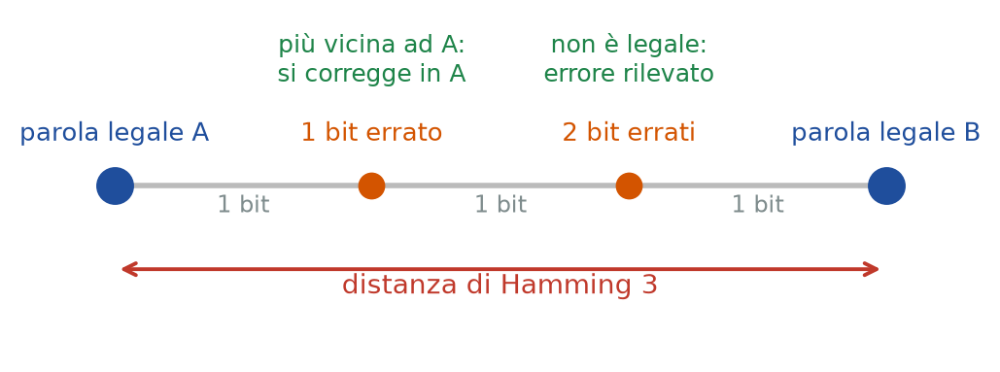
Con distanza minima 3 un errore si corregge, due si rilevano.
Distanza minima pari a 5: permette di rilevare fino a 4 bit errati simultanei e di correggerne fino a 2 in modo del tutto automatico.
L'implementazione dei codici correttori è cruciale nei supporti ad alta densità come gli Hard Disk e nei dischi ottici, nei quali segna una distinzione fondamentale tra i diversi formati:
CD-DA (Compact Disc Digital Audio): integra una protezione d'errore di base che riduce il tasso di errore residuo a circa 1 disco difettoso ogni 2 CD. Questo livello è accettabile per la riproduzione audio, dove i piccoli difetti vengono facilmente mascherati o interpolati senza un fastidio acustico percepibile.
CD-ROM (Data Storage): per la distribuzione di software ed eseguibili, dove anche un singolo bit errato renderebbe il programma inutilizzabile, lo standard CD-ROM aggiunge ulteriori livelli di correzione d'errore basati sulla distanza di Hamming, riducendo la probabilità di errore residuo a 1 solo disco difettoso ogni 20.000 dischi.
12. Logica Proposizionale: Proposizioni e Valori di Verità
Che cos'è la logica proposizionale
La logica proposizionale studia il modo più semplice di combinare affermazioni. Si parte da un insieme di proposizioni atomiche: affermazioni di cui non si analizza il contenuto, ma a cui si sa assegnare un valore di verità, vero o falso. Possono essere affermazioni sul mondo esterno ("c'è un'automobile", "è giorno", "la temperatura è sopra una certa soglia"), nel caso di un'applicazione informatica in cui una macchina rileva queste informazioni. Da questo punto in poi non ci si chiede più come si ottengono i valori di verità, ma come si combinano tra loro.
In parole povere: una proposizione atomica è un'affermazione semplice, senza pezzi dentro, di cui interessa solo se è vera o falsa (come c'è un'automobile o è giorno). È il mattoncino da cui si costruiscono le frasi più complicate.
Una proposizione è dunque una frase che è vera oppure falsa, ma non entrambe. Il libro la dimostra con una serie di frasi da classificare:
In parole povere: una proposizione è una frase di cui ha senso dire che è vera oppure falsa (una cosa o l'altra). Non importa se non sai quale delle due. Esempio: sette è un numero primo è vera; Roma è in Francia è falsa.
"I soli interi positivi che dividono 7 sono 1 e 7": è vera, e si verifica provando che 2, 3, 4, 5 e 6 non dividono 7 (è un altro modo di dire che 7 è primo);
"Alfred Hitchcock ha vinto l'Oscar per la regia nel 1940 con *Rebecca*": è falsa; si controlla su un archivio o chiedendolo a internet, ed è *Rebecca* ad aver vinto l'Oscar come miglior film, mentre per la regia vinse un altro regista;
"Per ogni intero positivo n esiste un numero primo più grande di n": è vera, ed è il teorema di Euclide (i numeri primi sono infiniti): un'affermazione complessa che per la logica proposizionale ha comunque un valore di verità;
"La Terra è l'unico pianeta dell'universo che contiene vita": non sappiamo se è vera o falsa e magari non lo sapremo mai, ma ha un valore di verità anche se ignoto. La logica proposizionale copre anche questi casi, in cui si suppone soltanto che il valore esista.
Che cosa non è una proposizione
Non tutte le frasi sono proposizioni. Il linguaggio contiene anche:
domande, che chiedono un'informazione: non descrivono come stanno le cose;
ordini, come "compra due biglietti per il concerto": lo scopo non è descrivere il mondo ma cambiarlo. In programmazione è così anche x = 3, che è un'istruzione imperativa, un ordine al compilatore di assegnare alla variabile x il valore 3;
affermazioni con parametri, come l'equazione x + 4 = 6: il suo valore di verità dipende da x. Con x = 2 è vera, con x = 0 è falsa. Finché ai parametri non è assegnato un valore, non è una proposizione.
Le variabili proposizionali
Per indicare le proposizioni si usano variabili come p, q e r, un po' come in algebra si usano le lettere per i numeri. Si può anche definire una variabile con una proposizione, scrivendo per esempio p: 1 + 1 = 3, cioè "p è la proposizione 1 + 1 = 3" (che è falsa).
In parole povere: una variabile proposizionale è un'etichetta (p, q, r) che sta per una proposizione qualsiasi, come in algebra x sta per un numero. Si usa per ragionare sulla forma delle frasi senza ripetere ogni volta il testo.
Perché si parla di valori booleani
I valori di verità si chiamano anche valori booleani, dal nome di George Boole, il primo a trattare la logica proposizionale in modo scientifico: la logica proposizionale esisteva da mille anni, ma fino ad allora era una parte della filosofia. Per un informatico le affermazioni composte con i connettivi sono il primo compito da affidare ai circuiti (visti nelle prime settimane del corso, capitoli 1 e 5 di questo Word): una formula di logica proposizionale si può realizzare con un circuito, ma anche scrivere e studiare su carta.
In parole povere: valore booleano è un altro nome per vero e falso (1 e 0). Il nome ricorda George Boole, che trasformò la logica da filosofia a calcolo, e per questo si parla di logica booleana quando i valori sono solo due.
La logica proposizionale si usa di fatto, anche senza dirlo, in tutte le dimostrazioni di matematica. Come ha sottolineato il docente, qui l'interesse è la base per il ragionamento automatico: si studieranno affermazioni più semplici di quelle di un corso di matematica, ma con più dettaglio, perché poi bisogna spiegare alle macchine come ragionare.
Il prossimo capitolo presenta i connettivi con cui si combinano le proposizioni.
13. I Connettivi: And, Or, Not, Xor ed Equivalenza
Combinare le proposizioni
Un connettivo è un'operazione che prende uno o più valori di verità in ingresso e ne restituisce uno in uscita. Sono gli stessi che i circuiti elementari realizzano (porte and, or, xor e not, già visti nel capitolo 5: qui si guardano con la tavola di verità), e alcuni erano già stati anticipati. Il valore di verità della proposizione composta è sempre determinato dai valori di verità delle sue componenti. Nelle tavole che seguono si indicano il vero con 1 e il falso con 0.
In parole povere: un connettivo è una macchinetta che prende uno o più valori di verità e ne restituisce uno nuovo, come and, or e not. Prende le frasi vero/falso e le combina per formarne di più grandi. Esempio: piove E fa freddo.
La congiunzione (and)
La congiunzione p ∧ q si legge "p e q": è vera quando entrambe le proposizioni sono vere, e falsa se almeno una è falsa. Esempio del libro: "un decennio è di 10 anni e un millennio è di 100 anni" è falsa, perché la seconda parte è falsa.
In parole povere: la congiunzione è la e: vale vero solo se sono vere tutte e due le frasi. Basta una falsa e il risultato è falso. Esempio: ho fame e ho soldi: se manca uno dei due, non mangio.
La disgiunzione (or) e il caso dell'xor
La disgiunzione p ∨ q si legge "p o q" ed è la disgiunzione inclusiva: è vera se è vera p, oppure è vera q, oppure lo sono entrambe. È falsa solo quando sono false tutte e due. Esempio del libro: "un millennio è di 100 anni o un millennio è di 1000 anni" è vera, perché basta la seconda parte.
In parole povere: la disgiunzione è la o: basta che una delle due sia vera. Anche se sono vere tutte e due, è vera. Solo se sono entrambe false è falsa. Esempio: prendo il caffè o il tè: se prendo tutti e due non ho sbagliato.
Esiste anche la disgiunzione esclusiva (l'*aut* del latino, xor in inglese), vera solo quando una delle due è vera e l'altra è falsa; non lo è quando sono vere entrambe. Nel parlato "o" può avere l'uno o l'altro significato, mentre in logica quando si scrive "or" si intende quella inclusiva.
In parole povere: lo xor è la o dell'aut aut: o una o l'altra, ma non entrambe. Esempio: nel menu fisso scegli la carne o il pesce: se li prendi tutti e due hai sbagliato.
Un esempio del docente: "piove e fa freddo". Se oggi non piove ma fa freddo (dove si fissa la soglia, per esempio, a 20 gradi), la congiunzione è falsa, perché la prima parte è falsa, mentre la disgiunzione "piove o fa freddo" è vera, perché la seconda parte è vera. Le frasi vanno poi sempre interpretate in un contesto.
La logica si occupa della forma delle proposizioni e dei rapporti tra loro, non del loro argomento: perciò "3 < 5 oppure Parigi è la capitale dell'Inghilterra" è ammessa ed è vera, perché 3 < 5 è vera.
La negazione (not)
La negazione ¬p si legge "non p" e scambia il valore di verità: è vera quando p è falsa e viceversa. Esempio del libro: se p è "π è stato calcolato con un milione di cifre decimali nel 1954" (falsa: ci si arrivò solo nel 1973), ¬p è vera.
In parole povere: la negazione ribalta il valore: se la frase era vera diventa falsa e viceversa. Come dire non è vero che... davanti alla frase.
Equivalenza e xor
L'equivalenza (o uguaglianza tra booleani) è vera quando i due valori sono uguali, falsa quando sono diversi. In programmazione corrisponde al test di uguaglianza (== in C++ e Java). Lo xor è la sua negazione: è vero quando i due valori sono diversi. L'equivalenza vale 0 nei due casi intermedi (valori diversi) e 1 nel primo e nell'ultimo (valori uguali); lo xor ha la tavola opposta.
In parole povere: l'equivalenza è vera quando i due valori sono uguali (tutti e due veri o tutti e due falsi) e falsa quando sono diversi. È il test sono uguali? applicato ai valori di verità.
Le tavole di questi connettivi
Con l'ordine del libro (prima il vero, 1, poi il falso, 0) le tavole sono:
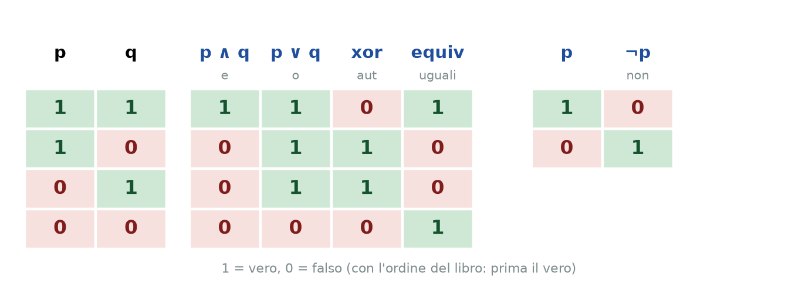
Le tavole di verità di and, or, xor, equivalenza e not (1 = vero, 0 = falso).
Notazioni diverse per lo stesso connettivo
Lo stesso connettivo si scrive in modi diversi a seconda del libro e del linguaggio: sono solo sinonimi, non hanno tavole di verità diverse. Se una notazione non è nota conviene chiedere che cosa significa.
Negazione: "non" (italiano), *not* (inglese), il simbolo ¬, la tilde ; nei linguaggi di programmazione (C, C++, Java) il punto esclamativo !.
Congiunzione: "e", *et* (latino), *and*, il simbolo ∧, la "e commerciale" &; in Java si scrive con la doppia &&.
Disgiunzione: "o" e "oppure", *vel* (latino), *or*, il simbolo ∨; in Java con la doppia barra verticale ||.
Nei linguaggi di programmazione "and", "or" e "not" sono definiti esattamente come in logica (esempi del libro): per esempio x < 10 && y > 4 è vera quando x è minore di 10 e y è maggiore di 4, x < 10 || y > 4 quando vale almeno una delle due, e !(x < 10) quando x è maggiore o uguale a 10.
La precedenza degli operatori
Quando una formula contiene ¬, ∧ e ∨ senza parentesi, si valuta prima ¬, poi ∧, poi ∨: è la precedenza degli operatori, come in algebra la moltiplicazione e la divisione si fanno prima di somma e sottrazione. Esempio del libro: con p falsa, q vera e r falsa, quanto vale ¬p ∨ q ∧ r? Si valuta prima ¬p, che è vera; poi q ∧ r, che è falsa; infine l'intera formula, vera ∨ falsa, che è vera.
In parole povere: la precedenza è l'ordine in cui si fanno le operazioni quando non ci sono parentesi, come in matematica dove si fa prima la moltiplicazione e poi la somma. Qui si valuta prima il not, poi l'and, poi l'or. Nel dubbio, metti le parentesi.
14. Le Tavole di Verità
A che cosa servono
Una tavola di verità è un elenco di tutte le combinazioni possibili dei valori di verità delle componenti atomiche, con a fianco, per ciascuna combinazione, il valore di verità della proposizione composta. È un modo alternativo di definire un connettivo: non più come circuito, ma come tabella. Serve perché non è facile stabilire se due circuiti sono equivalenti, mentre si possono leggere come formule proposizionali e confrontare le loro tavole: è l'applicazione principale delle tavole di verità in informatica.
In parole povere: una tavola di verità è una tabellina in cui metti tutte le combinazioni possibili di vero/falso delle frasi semplici e a fianco scrivi cosa viene alla frase composta. È come provare tutti i casi possibili uno per uno per vedere sempre il risultato.
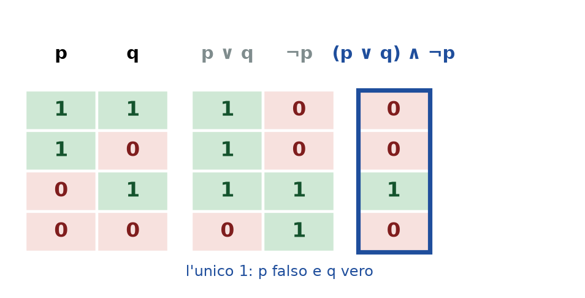
La tavola di (p ∨ q) ∧ ¬p, calcolata a passi: una colonna per ogni sottoformula.
La congiunzione ha un solo 1, quello della riga in cui p è falsa e q è vera. Lo stesso risultato si ottiene ragionando: se p è falsa, il primo argomento p ∨ q è vero solo se lo è q; se p è vera, ¬p è falsa e la congiunzione è falsa. Quindi (p ∨ q) ∧ ¬p equivale a ¬p ∧ q, una formula più breve: un modo per semplificare e, in un circuito, risparmiare una porta.
Quante righe ci sono
Con n proposizioni atomiche le righe sono 2ⁿ: 1 proposizione dà 2 righe, 2 danno 4, 3 danno 8 (come nell'esempio del libro). È un teorema che si dimostra per induzione e che si vedrà anche in Matematica discreta.
Bisogna elencare tutti i casi, e una volta sola. La prima richiesta è di correttezza: se manca un caso la definizione o il confronto non sono corretti. La seconda è di efficienza: ripetere uno stesso caso è uno spreco.
15. Equivalenze, Tautologie e Contraddizioni
Formule equivalenti
Due formule sono equivalenti se hanno gli stessi valori di verità per tutti i valori di verità delle loro componenti atomiche, cioè se hanno la stessa tavola di verità. Non sono la stessa formula, ma si possono scambiare l'una con l'altra, scegliendo quella più utile in un dato contesto. Questo vale per i circuiti (due circuiti equivalenti si possono sostituire), ma anche per i programmi: prima di sostituire la condizione di uscita di un ciclo con un'altra formula più leggibile bisogna essere sicuri che sia equivalente, altrimenti si cambia il comportamento del programma.
In parole povere: due formule sono equivalenti se in ogni caso possibile danno lo stesso risultato, cioè hanno la stessa tabella di verità. Sono scritte in modo diverso, ma si comportano allo stesso modo, come due modi diversi di dire la stessa cosa.
Esempio: la negazione di una disgiunzione
Si vuole vedere che ¬(p ∨ q) è equivalente a ¬p ∧ ¬q. Con le tavole di verità:
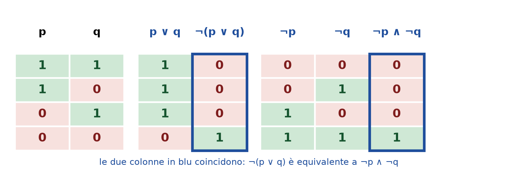
Le colonne di ¬(p ∨ q) e di ¬p ∧ ¬q coincidono: le due formule sono equivalenti.
Le colonne ¬(p∨q) e ¬p∧¬q coincidono. Lo stesso risultato si ottiene anche con un ragionamento, che il docente ha presentato passo per passo:
1. ¬(p ∨ q) è vera se e solo se p ∨ q è falsa;
2. una disgiunzione è falsa se e solo se i suoi argomenti sono entrambi falsi: p è falsa e q è falsa;
3. questo accade se e solo se ¬p e ¬q sono entrambe vere;
4. cioè se e solo se è vera la loro congiunzione ¬p ∧ ¬q.
È un caso delle leggi di De Morgan, che il corso riprenderà più in dettaglio. Si può dimostrare con le tavole oppure con un ragionamento a parole.
Tautologie e contraddizioni
Una tautologia è una formula che è sempre vera, qualunque siano i valori delle sue componenti: nella colonna finale della sua tavola ci sono solo 1. Una contraddizione è l'opposto: una formula sempre falsa. La negazione di una tautologia è una contraddizione, e viceversa. Il problema della tautologia è appunto quello di stabilire se una formula vale sempre.
In parole povere: la tautologia è la frase che è sempre vera, qualunque cosa succeda: ad esempio piove oppure non piove. La contraddizione è l'opposto, una frase sempre falsa, come piove e non piove insieme. La negazione di una è l'altra.
Le tavole di verità servono a controllare:
se due formule sono equivalenti;
se una formula è sempre vera (una legge logica), come le leggi di De Morgan o l'associatività della disgiunzione.
Esempi svolti a lezione
¬p ∨ q ∨ p. Costruita la tavola, in ogni riga c'è almeno un 1: è una tautologia.
p ∨ ¬p, chiamata terzo escluso. Se p è vera la disgiunzione è vera perché un argomento è vero; se p è falsa, ¬p è vera e di nuovo la disgiunzione è vera. Il nome dice che "o p è vera o è falsa, e non c'è un terzo caso": in realtà, ha sottolineato il docente, la logica è costruita con soli due valori di verità, e ne esistono altre, con valori intermedi, usate in informatica per scopi diversi, ma qui si usa sempre la logica a due valori.
In parole povere: il terzo escluso dice che una proposizione o è vera o è falsa, e non c'è una terza possibilità. Per questo p o non p è sempre vera: o piove oppure non piove.
(p ∨ q) ∧ ¬p. È vera in una sola riga, quella con p falsa e q vera: non è né una tautologia né una contraddizione, ma equivale a ¬p ∧ q, più semplice (come visto nel capitolo precedente).
Perché le tavole non bastano sempre
Le tavole di verità hanno un limite: le righe sono 2ⁿ. Con 1000 proposizioni atomiche sono 2¹⁰⁰⁰, un po' più di 10³⁰⁰ righe, un numero più grande del numero di particelle dell'universo. Con questa dimensione non si può usare la tavola, e servono metodi più veloci, che il corso accennerà più avanti. Il caso non è teorico: nella verifica di sistemi complessi (*model checking*) si descrive il sistema con una formula proposizionale che dice "non esiste una situazione di pericolo", con migliaia di affermazioni atomiche (la posizione e la velocità dei treni, lo stato dei segnali, la rete elettrica, il comportamento delle persone). Il docente ha citato studi di questo tipo per la metropolitana di Londra e per le ferrovie svedesi. Il model checking non fa parte del corso, ma è una delle motivazioni: a Fondamenti si impara la logica come base del ragionamento automatico.
16. L'Implicazione (Condizionale)
Da dove si riparte
Dopo i connettivi and, or, not, xor ed equivalenza, la logica proposizionale continua con l'implicazione, che nel libro è la sezione 1.3 della seconda parte. È anche il connettivo più delicato, perché il significato che gli si dà in logica proposizionale è diverso, e più povero, di quello che ha nel linguaggio comune.
Il significato dell'implicazione: materiale e non causale
Un esempio dal libro: "se il Dipartimento di Matematica ottiene 60 mila dollari di finanziamento extra, assumerà un nuovo professore". Nel linguaggio comune "se… allora" suggerisce innanzitutto una relazione di causa: quel denaro verrà usato proprio per assumere qualcuno. In logica proposizionale di questa relazione non c'è alcuna traccia. Si lavora soltanto con i valori di verità (vero e falso), e le tavole di verità sono troppo povere per esprimere un concetto complesso come la causalità. Per questo si dice che l'implicazione della logica è materiale: usa soltanto i valori di verità dei due argomenti e non le relazioni tra le due parti.
In parole povere: l'implicazione materiale guarda solo se le due frasi sono vere o false, non se una è causa dell'altra. Quindi se piove allora la Terra è rotonda è una frase che in logica ha un valore preciso, anche se pioggia e Terra non c'entrano niente.
La seconda differenza riguarda i casi in cui l'ipotesi non si verifica. Nel linguaggio comune, se il Dipartimento non ottiene il finanziamento, l'affermazione resta di fatto indefinita: non è né vera né falsa. In matematica avere affermazioni prive di valore di verità è molto svantaggioso, perché si potrebbe scrivere una dimostrazione senza accorgersi che è priva di senso. Per questo si decide di dare un significato a tutte le implicazioni, anche quando l'ipotesi è falsa.
La notazione e la tavola di verità
L'implicazione si scrive con una freccia: p → q si legge "p implica q". La proposizione p si chiama ipotesi o antecedente, la proposizione q si chiama tesi, conclusione o conseguente. La tavola di verità, con l'ordine del libro (prima il vero, 1, poi il falso, 0), è:
In parole povere: p implica q è come una promessa: se succede p, prometto q. L'ipotesi è la condizione (il se), la tesi è la cosa promessa (il allora). La promessa si rompe, cioè è falsa, solo quando la condizione si avvera ma la cosa promessa non c'è.
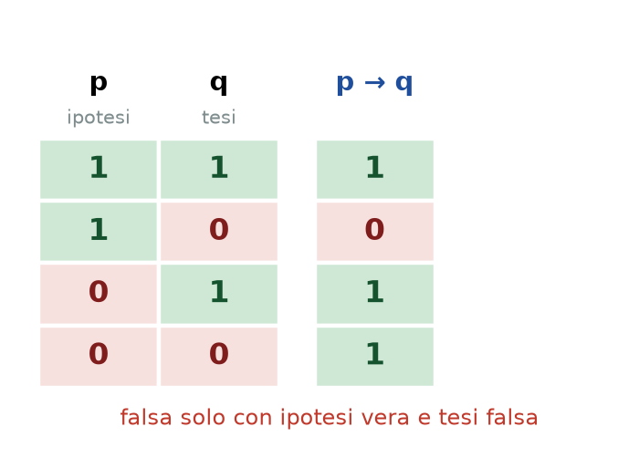
La tavola di verità dell'implicazione: l'unica riga falsa è quella con ipotesi vera e tesi falsa.
L'implicazione è falsa in un solo caso: quando l'ipotesi è vera e la tesi è falsa. Contano le due righe con ipotesi vera: si prende l'ipotesi vera e si controlla che sia vera anche la tesi. Se lo è, l'implicazione è vera; se non lo è, è falsa. Nelle altre due righe, quelle con ipotesi falsa, l'implicazione è vera senza nemmeno guardare la tesi.
Vero per difetto
Quando l'ipotesi è falsa l'implicazione è vera, qualunque sia la tesi. Si dice che è vera per difetto (in inglese *vacuously true*; si può dire anche "banalmente vera"). È una convenzione: bisognava dare un valore di verità a questi casi, e quello che per esperienza dà meno fastidio quando si scrivono le dimostrazioni è considerare l'implicazione come provata. Quando non ci sono le condizioni per usare l'implicazione, la si prende per buona e ci si concentra sui casi in cui l'ipotesi è vera.
In parole povere: se l'ipotesi è falsa la promessa non ha modo di essere violata, quindi si considera vera per comodità. Esempio: se vinco alla lotteria ti regalo un'auto: se non vinco, non ho mentito a nessuno.
Il motivo per cui la convenzione è comoda si vede con un esempio di matematica: "se x è positivo, allora x · x è positivo", cioè x > 0 → x · x > 0, che si vuole vera per ogni x.
Con x = 3: 3 > 0 è vera e 9 > 0 è vera, quindi l'implicazione è vera.
Con x = 1: 1 > 0 e 1 > 0 sono vere, e l'implicazione è vera.
Con x = 0: 0 > 0 è falsa e 0 · 0 > 0 è falsa. L'ipotesi è falsa, quindi l'implicazione è vera per difetto.
Con x = −1: −1 > 0 è falsa, ma (−1) · (−1) = 1 > 0 è vera. Anche qui l'ipotesi è falsa e l'implicazione è vera, senza che interessi che la tesi lo sia.
Nel linguaggio comune qualcuno direbbe che "se 0 > 0…" non ha senso. Ma in matematica, se sostituendo un valore al posto di x l'enunciato perdesse significato, un enunciato sensato diventerebbe privo di senso. Con la tavola di verità dell'implicazione l'enunciato ha invece sempre un valore: è vero per ogni x.
La tavola si può leggere anche così:
se la tesi è vera, l'implicazione è vera, e si può ignorare l'ipotesi;
se l'ipotesi è falsa, l'implicazione è vera, e si può ignorare la tesi;
l'unico caso in cui i due valori sono entrambi rilevanti è quello con ipotesi vera e tesi falsa, in cui l'implicazione è falsa.
Come sottolineato a lezione, nel corso di Fondamenti (e in quelli di Matematica e di Programmazione) si usa sempre questa implicazione materiale: bisogna dimenticare il significato di "se… allora" del linguaggio comune.
L'implicazione come test d'ordine
C'è un altro modo di descrivere la tavola. Scrivendo 0 al posto di falso e 1 al posto di vero, p → q vale 1 esattamente quando il valore di p è minore o uguale al valore di q: 1 ≤ 1, 0 ≤ 1 e 0 ≤ 0 danno 1, mentre l'unico caso in cui p ≤ q è falso è p = 1 e q = 0, che è proprio la riga falsa. L'implicazione si può quindi definire come il test d'ordine tra valori booleani.
Una conseguenza: la proposizione (p → q) ∨ (q → p) è sempre vera, qualunque siano i valori di p e di q. Nel linguaggio comune verrebbe da dire che è falsa, perché ci aspetteremmo che p sia causa di q oppure il contrario, mentre due eventi possono essere del tutto indipendenti. Ma tra due numeri uno dei due è sempre minore o uguale all'altro, e lo stesso vale per due valori di verità: se c'è almeno uno 0, il più piccolo è lo 0; se sono entrambi 1, sono uguali. Quindi una delle due implicazioni è vera, e la loro disgiunzione è sempre vera.
La precedenza
Come in 2 + 3 · 5 la moltiplicazione si esegue prima della somma, così tra i connettivi c'è una convenzione: l'implicazione si valuta per ultima. Con una negazione, un or e un'implicazione senza parentesi si calcolano prima la negazione e l'or, e poi l'implicazione: p ∨ q → ¬r significa (p ∨ q) → (¬r). Chi non vuole ricordare le convenzioni può aggiungere parentesi in più, e questo non è mai sbagliato, anche se dopo un po' diventa fastidioso.
Alcuni esempi di valutazione
Siano p vera, q falsa e r vera (p = 1, q = 0, r = 1). Valutiamo quattro formule.
(p ∧ q) → r. La congiunzione p ∧ q è falsa, perché uno dei due lati (q) è falso. L'ipotesi è quindi falsa e l'implicazione è vera, senza guardare r. In generale, se una parte di una congiunzione è falsa, l'intera congiunzione è falsa, e un'implicazione che ha quella congiunzione come ipotesi è vera.
(p ∨ q) → ¬r. La disgiunzione p ∨ q è vera (basta che un lato sia vero), mentre ¬r è falsa. Si ha 1 → 0, e l'implicazione è falsa.
p ∧ (q → r). L'implicazione q → r ha ipotesi falsa, quindi è vera per difetto; anche p è vera. La congiunzione è quindi vera.
p → (q → r). L'implicazione interna q → r è vera per difetto, quindi si ha 1 → 1, e l'intera formula è vera.
L'ultima formula si legge in modo naturale come "se vale p, allora (se vale q, allora vale r)", cioè come un'implicazione con due ipotesi: se p e q sono entrambe vere, allora è vera r. In generale, quando un'implicazione ha più ipotesi e anche una sola è falsa, l'implicazione è vera per difetto; se tutte le ipotesi sono vere bisogna controllare la tesi, e l'implicazione è falsa solo se la tesi è falsa. Le due scritture sono in effetti equivalenti: p → (q → r) e (p ∧ q) → r sono false soltanto quando p e q sono vere e r è falsa.
Il capitolo successivo parte dall'implicazione per costruire la sua conversa, la sua contrapposta e le espressioni "condizione necessaria" e "condizione sufficiente".
17. Conversa, Contrapposta, Condizioni Necessarie e Sufficienti
Le forme correlate a un'implicazione
Da un'implicazione se ne possono costruire altre, scambiando i due argomenti o anche negandoli. Data p → q, si definiscono due proposizioni correlate:
la conversa (o reciproco, in inglese *converse*): q → p, che scambia i ruoli di ipotesi e tesi;
In parole povere: la conversa si ottiene girando l'implicazione, cioè scambiando se e allora. Esempio: se piove, la strada è bagnata diventa se la strada è bagnata, piove. Non dice la stessa cosa: la strada può essere bagnata per altri motivi.
la contrapposta (in inglese *contrapositive*): ¬q → ¬p, che scambia i ruoli e nega entrambi gli argomenti.
In parole povere: la contrapposta si ottiene scambiando e negando entrambi i pezzi: da se piove, la strada è bagnata si passa a se la strada non è bagnata, non piove. Dice esattamente la stessa cosa dell'originale.
La conversa non è equivalente
Un'implicazione e la sua conversa non sono equivalenti. Un esempio: sia p la proposizione "1 > 2", che è falsa, e q la proposizione "4 < 8", che è vera. L'implicazione p → q ha l'ipotesi falsa, quindi è vera per difetto. La conversa q → p ha l'ipotesi vera e la tesi falsa, quindi è falsa. Esistono dunque valori di p e q per cui p → q e q → p hanno valori di verità diversi: succede quando p e q sono diversi.
Se si cambia la direzione di un'implicazione, il valore di verità cambia in due casi su quattro; quando p e q sono entrambe vere, o entrambe false, resta lo stesso (vera per entrambe). Un altro esempio: "se Jerry vince la lotteria, allora va al college" può essere vera, mentre la conversa "se Jerry va al college, allora ha vinto la lotteria" è falsa, perché potrebbe andarci con i suoi risparmi. L'errore più frequente è appunto scambiare un'implicazione con la sua conversa.
La contrapposta è equivalente
Con la contrapposta le cose vanno diversamente: p → q e ¬q → ¬p hanno la stessa tavola di verità.
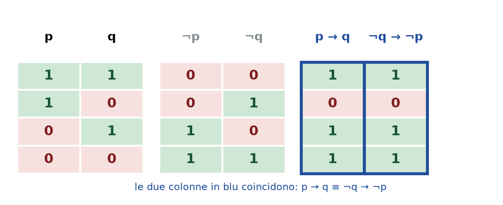
Le tavole di verità di p → q e della sua contrapposta ¬q → ¬p: le colonne coincidono.
Anche con un ragionamento: p → q dice che tutte le volte che p è vera lo è anche q; allora se q è falsa dovrà essere falsa anche p. Quindi da p → q segue ¬q → ¬p. Applicando la stessa legge un'altra volta a ¬q → ¬p si ottiene ¬¬p → ¬¬q, e per la legge della doppia negazione (negare due volte equivale ad affermare: ¬¬p ≡ p, come si vede subito dalla tavola) si ritorna a p → q. Ciascuna delle due implicazioni si ottiene dall'altra, e sono quindi equivalenti.
Condizioni necessarie e condizioni sufficienti
Nei corsi di matematica le implicazioni si esprimono spesso con le parole "condizione necessaria" e "condizione sufficiente". Non c'è un concetto nuovo: sono solo abbreviazioni per le due direzioni di un'implicazione, e vanno conosciute.
A è una condizione necessaria per B significa che, quando B è vera, è necessario che lo sia anche A: B → A. Il "necessario" è la parte implicata.
In parole povere: A è necessaria per B se, senza A, B non può esserci. Come il biglietto per entrare al cinema: ti serve, ma non basta da solo (se non hai A, sicuramente non hai B).
A è una condizione sufficiente per B significa A → B: se A è vera, basta questo perché lo sia B. Il "sufficiente" è l'ipotesi.
In parole povere: A è sufficiente per B se, quando c'è A, B c'è di sicuro. Come avere la laurea per essere laureati: basta quello. Ma B potrebbe esserci anche per altre strade.
La condizione necessaria è la direzione "difficile", quella da destra a sinistra rispetto al modo in cui di solito scriviamo; la condizione sufficiente è quella che ci viene più naturale, da sinistra a destra: è semplicemente l'implicazione scritta nell'ordine consueto, mentre il necessario è il reciproco.
Che cosa si può dedurre? Basta rileggere la tavola di verità con questa terminologia.
Se A è necessaria per B (B → A):
se A è vera, su B non si sa nulla (la condizione non è stata smentita, ma da sola non basta);
se A è falsa, allora anche B è falsa: se una condizione necessaria fallisce, fallisce ciò di cui è condizione;
se B è vera, allora A è vera: la verità di un fatto implica la verità di tutte le sue condizioni necessarie;
se B è falsa, su A non si sa nulla: può essere falsa proprio per questa condizione o per un'altra.
Se A è sufficiente per B (A → B):
se A è vera, allora B è vera;
se A è falsa, su B non si sa nulla;
se B è vera, su A non si sa nulla, perché quando la tesi è vera l'implicazione è vera comunque;
se B è falsa, allora anche A è falsa: se fosse vera, anche B dovrebbe esserlo.
Un esempio che non richiede conoscenze particolari: "se Maria va alla Tour Eiffel, allora visita la Francia". Andare alla Tour Eiffel è una condizione sufficiente per visitare la Francia, ma non è necessaria: Maria potrebbe andare a Les Invalides, al Louvre o in Normandia, e ognuna di queste scelte sarebbe sufficiente a visitare la Francia. Invece visitare la Francia è una condizione necessaria per vedere la Tour Eiffel (se non è in Francia, non può raggiungerla), ma non basta: dipende da dove va esattamente in Francia.
Come si traduce dal linguaggio naturale
Nei quesiti d'esame l'implicazione p → q non compare sempre nella forma "se p, allora q". Le formulazioni seguenti equivalgono tutte a p → q:
"se p, allora q" e "p implica q";
"q se p" (p, dopo il "se", è l'ipotesi);
"p solo se q" (attenzione: non q → p; il "solo se" introduce la condizione necessaria, cioè la tesi);
"p è condizione sufficiente per q";
"q è condizione necessaria per p".
Riassumendo: l'ipotesi è la condizione sufficiente, la tesi è la condizione necessaria; la conversa, quella con i ruoli scambiati, non è equivalente all'implicazione di partenza, mentre la contrapposta lo è.
18. Il Bicondizionale, l'Equivalenza e le Riscritture dell'Implicazione
L'equivalenza logica
Due formule sono logicamente equivalenti quando hanno la stessa tavola di verità (capitolo 15); si scrive P ≡ Q. Il bicondizionale, già incontrato come "equivalenza" nel capitolo 13, è il connettivo che dà 1 quando due valori sono uguali: p ↔︎ q (si legge "p se e solo se q", in inglese *iff*, o anche "doppia freccia") è vera quando i due valori di verità sono uguali (entrambi veri o entrambi falsi) ed è falsa quando sono diversi. È dunque il test di uguaglianza tra due valori di verità, ed è legato alla relazione ≡ tra formule: P ≡ Q vale proprio quando P ↔︎ Q è una tautologia.
In parole povere: due formule sono logicamente equivalenti se in ogni caso valgono la stessa cosa (stessa tavola di verità). Il bicondizionale p se e solo se q è il connettivo che dice sono uguali: è vero se le due frasi sono entrambe vere o entrambe false.
Il bicondizionale e le due implicazioni
Si chiama bicondizionale perché è fatto di due condizionali opposti, l'implicazione da sinistra a destra e quella da destra a sinistra: p ↔︎ q ≡ (p → q) ∧ (q → p). In parole, p è condizione necessaria e sufficiente per q.
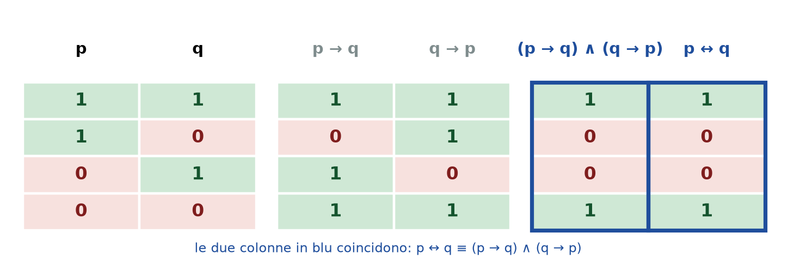
La tavola di verità del bicondizionale: coincide con quella della congiunzione delle due implicazioni.
Lo si può provare con una tavola di verità, come in figura, oppure con un ragionamento. Poiché p → q equivale a "il valore di p è minore o uguale al valore di q", la congiunzione (p → q) ∧ (q → p) dice che p ≤ q e q ≤ p. Per una proprietà degli ordini (l'antisimmetria), se p ≤ q e q ≤ p allora p e q sono uguali: quindi la congiunzione è il test di uguaglianza, cioè il bicondizionale. Quale dei due modi sia la definizione e quale la proprietà dipende da come si è definito il bicondizionale: se lo si definisce con la tavola di verità, si osserva che vale 1 con due valori uguali e 0 con due diversi, e poi si mostra l'equivalenza con le due implicazioni.
L'implicazione si può scrivere con altri connettivi
Non è necessario avere l'implicazione come connettivo (o come circuito): se si sa realizzare la negazione e la congiunzione, si può realizzare anche l'implicazione. Vediamo come.
La negazione dell'implicazione. L'implicazione è falsa in un solo caso: ipotesi vera e tesi falsa. Quindi ¬(p → q) è vera esattamente quando p è vera e q è falsa:
¬(p → q) ≡ p ∧ ¬q.
La negazione di un'implicazione non è un'altra implicazione, ma una congiunzione. Attenzione al modo in cui si nega un'implicazione: p → ¬q oppure ¬p → ¬q non sono corrette; la negazione giusta è p ∧ ¬q. Per esempio, la negazione di "se Jerry riceve una borsa di studio, allora va al college" è "Jerry riceve la borsa di studio e non va al college".
La doppia negazione. Serve una legge banale ma importante: negare due volte equivale ad affermare, ¬¬p ≡ p. Basta guardare la tavola: se p è vera, ¬p è falsa e ¬¬p torna vera; se p è falsa, ¬p è vera e ¬¬p torna falsa. Nel linguaggio naturale non è così: dire che qualcosa "non è proprio falso" intende di solito qualcosa di più debole di "è vero". Nel linguaggio semplificato della logica, dove si guardano solo i valori di verità, non c'è alcuna differenza.
L'implicazione con negazione e disgiunzione. Si parte dalla legge precedente e si aggiunge una doppia negazione:
p → q ≡ ¬¬(p → q) ≡ ¬(p ∧ ¬q).
Sono già tre connettivi (due negazioni e una congiunzione) che ci permettono di scrivere l'implicazione. Con la legge di De Morgan, di cui nel capitolo 15 si è visto il caso della disgiunzione e di cui subito sotto si giustifica la versione duale per la congiunzione, si può ridurre. La legge dice che negare una congiunzione equivale a disgiungere le negazioni degli argomenti: ¬(a ∧ b) ≡ ¬a ∨ ¬b. Applicata a ¬(p ∧ ¬q) dà ¬p ∨ ¬¬q, e per la doppia negazione si arriva a
p → q ≡ ¬p ∨ q.
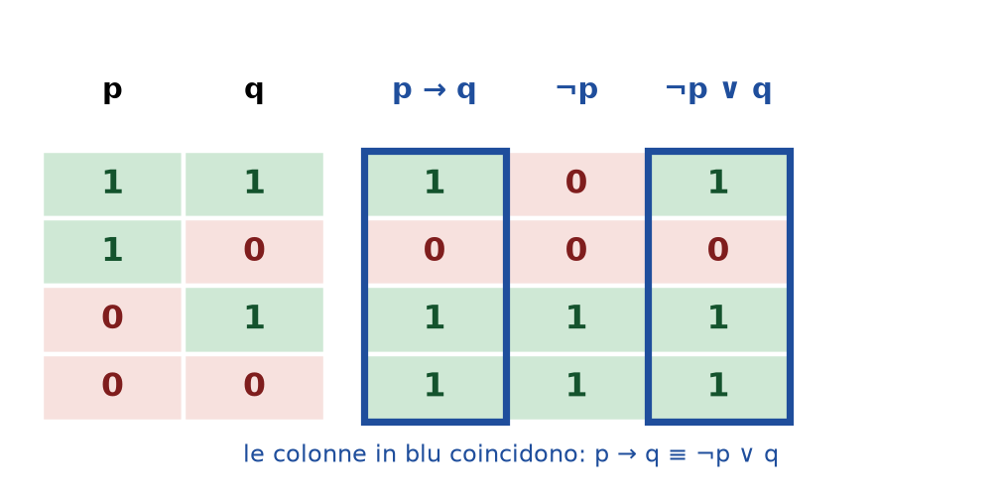
Le colonne di p → q e di ¬p ∨ q coincidono.
È la definizione più usata dell'implicazione, e dice che un'implicazione è vera se e solo se l'ipotesi è falsa oppure la tesi è vera: sono esattamente i tre casi veri della tavola, quelli con la tesi vera (due righe) e quelli con l'ipotesi falsa (due righe), con una sovrapposizione, perché con ipotesi falsa e tesi vera l'implicazione è vera per due motivi indipendenti. Si poteva arrivarci in un passo solo osservando la tavola; il passaggio per De Morgan mostra che le leggi si combinano.
Per questo, in un linguaggio come Java, l'implicazione non serve come operatore: p → q si scrive come !p || q.
Le leggi di De Morgan e la dualità
Le leggi di De Morgan sono due:
¬(p ∧ q) ≡ ¬p ∨ ¬q: negando una congiunzione si disgiungono le negazioni;
¬(p ∨ q) ≡ ¬p ∧ ¬q: negando una disgiunzione si congiungono le negazioni (già vista nel capitolo 15).
Sono duali: se si scambiano vero e falso, congiunzione e disgiunzione e si lascia la negazione com'è (la negazione è auto-duale: scambiando vero e falso, la sua tavola resta la stessa), da una legge si ottiene l'altra. La logica proposizionale è duale in generale: non c'è un ruolo privilegiato per il vero o per il falso, e se si scambia ovunque vero con falso e congiunzione con disgiunzione, ogni equivalenza valida si trasforma nella sua duale, che è ancora un'equivalenza valida. Si può quindi dire che c'è un'unica legge di De Morgan, e l'altra è la sua duale.
Un'applicazione in Java: la condizione x < 10 || x > 20 equivale a !(x >= 10 && x <= 20). Questa seconda scrittura nega l'appartenenza all'intervallo tra 10 e 20 estremi compresi; applicando De Morgan si porta la negazione dentro le parentesi, scambiando la congiunzione con la disgiunzione, e arrivando ai predicati di base (uguale, diverso, minore, maggiore, minore o uguale, maggiore o uguale) si sostituisce ciascuno con il suo complementare: la negazione di x >= 10 è x < 10 e quella di x <= 20 è x > 20. La prima forma si legge più facilmente: per questo si preferisce.
Il limite delle tavole di verità
Le tavole di verità sono un buon metodo per provare un'equivalenza o una tautologia quando le proposizioni atomiche sono poche (come per p ↔︎ q e le due implicazioni), ma non funzionano su grande scala: con n proposizioni atomiche le righe sono 2n, quindi il numero di passi cresce in modo esponenziale. Con cento proposizioni atomiche servirebbe una tavola di 2100 righe, circa 1030, un numero che nessun computer di oggi riesce a percorrere. In questi casi servono metodi più rapidi, che però hanno altri difetti: non riescono a concludere in tutti i casi.
19. Argomenti e Regole di Inferenza
Il ragionamento deduttivo
Si parte da un esempio. Supponiamo di sapere tre cose: il bug è nel modulo 17 oppure nel modulo 81; il bug è un errore numerico; il modulo 81 non contiene errori numerici. Assumendo che queste affermazioni siano vere, è ragionevole concludere che il bug è nel modulo 17.
Questo processo, in cui da una sequenza di proposizioni si trae una conclusione, si chiama ragionamento deduttivo. Le proposizioni di partenza si chiamano ipotesi (o premesse), la proposizione che ne segue si chiama conclusione, e l'insieme di ipotesi più conclusione è un argomento (deduttivo). Molte dimostrazioni di matematica e di informatica sono argomenti deduttivi.
In parole povere: il ragionamento deduttivo è il ragionamento in cui parti da fatti che ti vengono dati (le ipotesi o premesse) e ne tiri fuori una conseguenza (la conclusione). L'argomento è l'insieme di queste premesse più la conclusione, come un piccolo mattone di dimostrazione.
Un argomento ha sempre la stessa forma: «se p₁ e p₂ e … e pn, allora q». È la forma di un'implicazione, e questo collegamento con i capitoli 16-18 è la chiave per capire quando un argomento «funziona».
Argomento valido
Definizione. Un argomento è una successione di proposizioni p₁, p₂, …, pn (le ipotesi) seguita da una proposizione q (la conclusione), che si scrive con le ipotesi una sotto l'altra e la conclusione sotto una riga, preceduta dal simbolo ∴ («quindi»), oppure in una riga sola come p₁, p₂, …, pn / ∴ q. L'argomento si dice valido se, ogni volta che p₁ e p₂ e … e pn sono tutte vere, anche q è vera; altrimenti si dice non valido (o una fallacia).
In parole povere: un argomento è valido se, ogni volta che le ipotesi sono tutte vere, la conclusione deve essere vera per forza: non può succedere che le premesse siano vere e la conclusione falsa. Conta solo la forma, non se le frasi sono vere nella realtà. Esempio: se piove, la strada è bagnata; piove; quindi la strada è bagnata.
In un argomento valido si dice che la conclusione segue dalle ipotesi, ma bisogna capirsi su che cosa si afferma: non si dice che la conclusione è vera, ma solo che se si accettano le ipotesi si deve accettare anche la conclusione. Un argomento è valido per la sua forma e non per il suo contenuto: due argomenti con la stessa forma sono entrambi validi o entrambi non validi, anche se parlano di cose completamente diverse.
In termini dei capitoli precedenti, dire che l'argomento è valido equivale a dire che l'implicazione (p₁ ∧ p₂ ∧ … ∧ pn) → q non è mai falsa: ipotesi tutte vere e conclusione falsa è l'unico caso che la renderebbe falsa.
Un argomento più lungo si costruisce a passi, e ciascun passo deve produrre una conclusione intermedia valida. Le regole di inferenza sono, in breve, argomenti validi già noti, che si usano come mattoni all'interno di un argomento più grande.
In parole povere: una regola di inferenza è un argomento valido già collaudato e riutilizzabile, come una mossa standard degli scacchi. Quando in un ragionamento ne riconosci la forma, puoi applicarla senza ricontrollare tutto.
Come si verifica la validità
Il primo metodo è la tavola di verità: si scrivono i valori di tutte le proposizioni coinvolte e si controlla che in ogni riga in cui le ipotesi sono vere lo sia anche la conclusione. Il secondo metodo è un ragionamento diretto, che evita la tavola: si suppone che le ipotesi siano vere e si verifica che la conclusione non può essere falsa.
Esempio. Si vuole stabilire se è valido l'argomento p → q, p / ∴ q.
Esempio. «Se piove, la strada è bagnata» (p → q). «Sta piovendo» (p). Quindi la strada è bagnata (q).
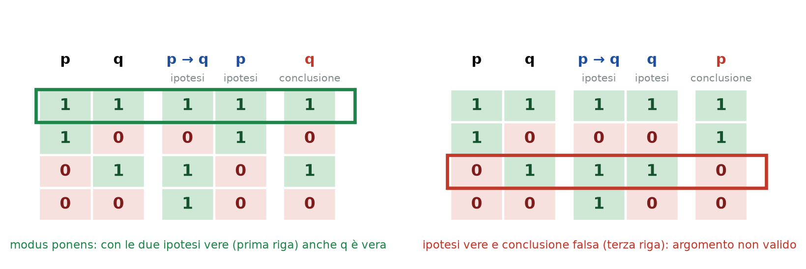
A sinistra la tavola del modus ponens: nell'unica riga con le due ipotesi vere (riquadro verde) lo è anche la conclusione. A destra la tavola dell'argomento p → q, q / ∴ p: nella terza riga le ipotesi sono vere e la conclusione è falsa.
Con la tavola (a sinistra nella figura) si osserva che ogni volta che p → q e p sono entrambe vere, lo è anche q: l'argomento è valido. Con il ragionamento diretto: si suppone che p → q e p siano vere; allora q deve essere vera, perché altrimenti p → q sarebbe falsa (ipotesi vera e tesi falsa). Questo argomento è usato continuamente e si chiama modus ponens o legge del distacco.
In parole povere: il modus ponens è la regola più naturale: sai che se p allora q, e sai che p è vera, quindi puoi dire che q è vera. Esempio: se studio, passo l'esame; ho studiato; quindi passo l'esame.
Le regole di inferenza per le proposizioni
Esistono diverse regole utili, ognuna verificabile con una tavola di verità; le principali sono nella figura.
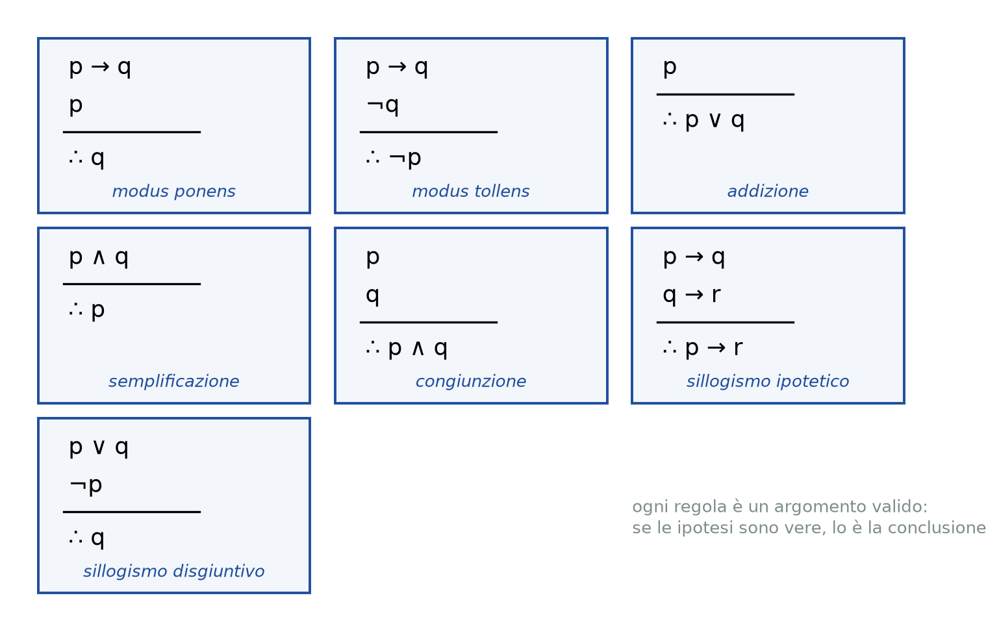
Le regole di inferenza per le proposizioni: premesse sopra la riga, conclusione sotto.
Modus ponens: da p → q e p si ricava q.
Modus tollens: da p → q e ¬q si ricava ¬p.
Addizione: da p si ricava p ∨ q.
Semplificazione: da p ∧ q si ricava p.
Congiunzione: da p e da q si ricava p ∧ q.
Sillogismo ipotetico: da p → q e q → r si ricava p → r.
Sillogismo disgiuntivo: da p ∨ q e ¬p si ricava q.
Per riconoscere la regola in un argomento scritto a parole bisogna prima tradurlo in simboli, come nell'esempio seguente. «Se il computer ha un gigabyte di memoria, allora può eseguire il programma. Se può eseguire il programma, allora la grafica sarà d'effetto. Quindi, se il computer ha un gigabyte di memoria, la grafica sarà d'effetto.» Con p = «il computer ha un gigabyte di memoria», q = «può eseguire il programma» e r = «la grafica sarà d'effetto», l'argomento è p → q, q → r / ∴ p → r: la regola usata è il sillogismo ipotetico.
Una fallacia frequente: affermare la conclusione
Non tutti gli argomenti che «sembrano» validi lo sono. Si consideri: «Se 2 = 3, allora ho mangiato il cappello. Ho mangiato il cappello. Quindi 2 = 3.» Con p = «2 = 3» e q = «ho mangiato il cappello», l'argomento è p → q, q / ∴ p.
Se fosse valido, ogni volta che p → q e q sono vere dovrebbe esserlo anche p. Ma questo non succede: con p falsa e q vera, l'implicazione p → q è vera per difetto (ipotesi falsa), q è vera, e la conclusione p è falsa. L'argomento non è valido. Questa fallacia si chiama affermazione della conclusione (in inglese *fallacy of affirming the conclusion*): è lo stesso errore, già visto nel capitolo 17, di scambiare un'implicazione con la sua conversa. Si arriva alla stessa conclusione guardando la tavola (a destra nella figura): nella terza riga le ipotesi sono vere e la conclusione è falsa.
In parole povere: è l'errore di credere che da se p allora q e da q segua p. Esempio: se piove, la strada è bagnata; la strada è bagnata; quindi piove? No, magari è passata la spazzatrice. È lo stesso errore di scambiare un'implicazione con la sua conversa.
Argomenti in più passaggi
Quando un argomento non coincide con una sola regola, si procede a passi, applicando una regola alla volta e usando le conclusioni intermedie come nuove ipotesi.
Il bug nei moduli. Si ripete l'argomento d'apertura con p = «il bug è nel modulo 17», q = «il bug è nel modulo 81» e r = «il bug è un errore numerico». Le ipotesi sono p ∨ q, r e r → ¬q (il modulo 81 non ha errori numerici, quindi se il bug è numerico non è nel 81). Da r → ¬q e r, per il modus ponens si ricava ¬q. Da p ∨ q e ¬q, per il sillogismo disgiuntivo, si ricava p: il bug è nel modulo 17. L'argomento è valido.
La squadra. Sono date le ipotesi: se la squadra prende un buon difensore, può battere la prima avversaria; se può battere la prima, può battere la seconda; se può battere la prima, può battere la terza; la squadra prende un buon difensore. Si vuole mostrare che ne segue che la squadra può battere la seconda e la terza. Con p = «prende un buon difensore», q = «batte la prima», r = «batte la seconda» e s = «batte la terza», le ipotesi sono p → q, q → r, q → s e p.
1. Da p → q e q → r, per il sillogismo ipotetico, p → r.
2. Da p → r e p, per il modus ponens, r.
3. Da p → q e q → s, per il sillogismo ipotetico, p → s.
4. Da p → s e p, per il modus ponens, s.
5. Da r e s, per la congiunzione, r ∧ s.
Poiché r ∧ s dice che la squadra batte la seconda e la terza, la conclusione segue dalle ipotesi.
Un consiglio pratico
La validità di un argomento molto breve si può verificare con una tavola di verità, ma, nella pratica, argomenti e dimostrazioni usano le regole di inferenza: le tavole crescono in modo esponenziale con il numero di proposizioni (capitolo 18), mentre una catena di regole resta corta e leggibile.
20. Predicati, Dominio del Discorso e Variabili
Perché non basta la logica proposizionale
Dopo la logica proposizionale (capitoli 12-19) si passa alla logica dei quantificatori. Come sottolineato a lezione, la si tratta con più dettaglio di quanto facciano i corsi di matematica, ma per un motivo diverso: lo scopo è preparare alla possibilità di meccanizzare il ragionamento, cioè insegnare a un computer a controllare una dimostrazione e a cercare delle verità. Per questo bisogna conoscere con precisione le definizioni di connettivo, di quantificatore e le regole di inferenza, più di quanto servirebbe per capire una dimostrazione di matematica; gli esempi di prove che si fanno sono volutamente troppo semplici per un corso di matematica, ma servono a capire che cos'è una prova e come si controlla se è corretta.
La logica proposizionale dei capitoli precedenti non basta a descrivere la maggior parte degli enunciati della matematica e dell'informatica. Si prenda l'affermazione «n è un intero dispari»: non è una proposizione, perché è vera o falsa a seconda del valore di n (è vera per n = 103 e falsa per n = 8). Siccome quasi tutti gli enunciati usano variabili, bisogna estendere la logica per includerle.
Funzione proposizionale (o predicato)
Definizione. Sia P(x) un enunciato che contiene la variabile x e sia D un insieme. P si chiama funzione proposizionale o predicato (rispetto a D) se per ogni x ∈ D l'enunciato P(x) è una proposizione. L'insieme D si chiama dominio del discorso di P e specifica i valori ammessi per x.
In parole povere: un predicato è una frase con un buco da riempire. Finché il buco è vuoto la frase non è né vera né falsa; appena metti un valore del dominio diventa vera o falsa. Il dominio è l'insieme dei valori che ci puoi mettere. Esempio: x è dispari con x = 3 è vera, con x = 8 è falsa.
Un predicato da solo non è né vero né falso: lo diventano le singole proposizioni P(x) quando alla variabile si assegna un valore del dominio. Si può pensare al predicato come a una famiglia di proposizioni, una per ogni elemento del dominio: se D = ℤ⁺ (gli interi positivi: ℤ è il nome degli interi, ℤ⁺ è riservato a 1, 2, 3, …) si ottiene la famiglia P(1), P(2), …, e ciascuna è vera o falsa ma non entrambe.
Il dominio serve perché certe sostituzioni non avrebbero senso: «π è un numero dispari» non significa nulla, perché si parla di interi. Un predicato può anche avere più variabili, come una funzione può avere più argomenti: il test di uguaglianza tra due stringhe, che si incontra in programmazione, è un predicato a due variabili sull'insieme delle sequenze di caratteri.
Esempio. Sia P(n) = «n è un intero dispari», con dominio ℤ⁺. Allora P(1) = «1 è dispari» è vera e P(2) = «2 è dispari» è falsa.
In programmazione succede lo stesso: l'affermazione x < y non è né vera né falsa finché non si assegnano valori a x e a y; con x = 3 e y = 2 diventa 3 < 2, che è falsa. Come in logica proposizionale, si possono quindi scrivere anche enunciati falsi (come «2 è un numero dispari»): servono proprio perché si vuole insegnare a un computer a distinguere tra vero e falso, a dare una garanzia quando un'affermazione è vera o a smentire una convinzione sbagliata.
Esempi di funzioni proposizionali, con il loro dominio:
n² + 2n è dispari (dominio ℤ⁺);
x² − x − 6 = 0 (dominio ℝ);
«il giocatore ha battuto sopra .300 nel 2015» (dominio: i giocatori di baseball);
«il film ha una valutazione superiore al 20% su Rotten Tomatoes», con la scala da 0% a 100% (dominio: i film valutati dal sito).
Negli ultimi due la variabile è «giocatore» o «film»: sostituendo un giocatore o un film particolare si ottiene una proposizione (vera con Spectre, che ha il 64%; falsa con Blended, che ha il 14%). Ciò che è un parametro con valore già assegnato, come il 20% o il nome del sito, non è la variabile: cambiando sito o soglia cambia la funzione, ma resta una funzione proposizionale nella sola variabile film.
Un predicato può essere sempre vero, sempre falso, oppure vero in qualche caso e falso in altri. Per x² − x − 6 = 0 su ℝ basta risolvere l'equazione di secondo grado: le radici sono 3 e −2, quindi il predicato è vero solo per x = 3 e x = −2 e falso in tutti gli altri casi (con x = 10 si ha 100 − 10 − 6 = 84).
Variabile libera e variabile legata
Si chiama variabile libera una variabile non ancora assegnata (è «libera» di spaziare su tutto il dominio), e variabile legata una variabile a cui è stato assegnato un valore oppure che compare dentro un quantificatore, nel qual caso si intende che prende tutti i valori del dominio.
In parole povere: una variabile libera è una lettera ancora da riempire, quindi la frase non è vera né falsa. Una variabile legata è già sistemata: o le hai dato un valore preciso, o è sotto un per ogni oppure esiste che le dice di quali valori parlare. Esempio: x più 4 uguale a 6 ha la x libera; per ogni x, x più 0 uguale a x non ha variabili libere ed è vera o falsa.
Una funzione proposizionale non ha un valore di verità. Un enunciato con variabili libere non è una proposizione; un enunciato senza variabili libere (tutte legate) è una proposizione, e ha un valore di verità.
Due esempi di enunciati senza variabili libere: «per ogni triangolo T, la somma degli angoli di T è 180°» (un teorema di geometria euclidea) e «esiste un programma P il cui output è P stesso» (in informatica; ne sono un esempio i virus, che devono saper produrre in output sé stessi per riprodursi, cosa più facile in un linguaggio a basso livello dove si sa in quali celle sta il programma). Per dare un significato a enunciati di questo tipo si dovrebbero prendere tutti i triangoli, o tutti i programmi, e controllarli: un metodo puramente ideale, perché sono infiniti. Sono esempi di quantificazione, introdotta nei capitoli seguenti: il capitolo 21 tratta «per ogni», il capitolo 22 tratta «esiste».
21. Il Quantificatore Universale
La definizione
Un enunciato della forma «per ogni x, P(x)» si dice enunciato quantificato universalmente. Il simbolo ∀ significa «per ogni» e si chiama quantificatore universale: l'enunciato si scrive ∀x P(x). Nel linguaggio naturale, in inglese, «for all», «for any» e «for every» sono sinonimi; il simbolo ∀ si può leggere in tutti questi modi. È «universale» perché tutti gli oggetti del discorso devono avere la proprietà.
Definizione. Sia P una funzione proposizionale con dominio D. L'enunciato ∀x P(x) è vero se P(x) è vera per ogni x ∈ D. È falso se P(x) è falsa per almeno un x ∈ D.
In parole povere: il per ogni dice che la proprietà vale per tutti gli elementi del dominio, senza eccezioni. Per dire che è vero devi controllare che non ce ne sia nemmeno uno che sbaglia; per dire che è falso ne basta uno solo che sbaglia. Esempio: tutti gli studenti della classe hanno il libro: basta uno senza libro per renderla falsa.
Come sottolineato a lezione, per decidere il valore di un quantificatore si assegnano alla funzione tutti i possibili valori del dominio e si controlla che siano tutti veri. Ne basta uno falso su infiniti perché il quantificatore sia falso: non è una questione di probabilità. Si lavora con due soli valori di verità, quindi non esistono gradazioni come «quasi sempre vero» (quelle appartengono a studi molto più avanzati).
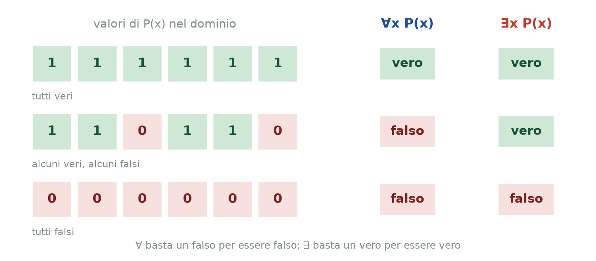
I tre casi: P(x) vera ovunque, vera in alcuni punti, falsa ovunque.
Un valore di x del dominio che rende P(x) falsa si chiama controesempio all'enunciato ∀x P(x).
In parole povere: un controesempio è un caso che smentisce un per ogni: un solo elemento del dominio per cui la proprietà non vale. Come dire tutti i cigni sono bianchi: un singolo cigno nero è sufficiente per smentirlo.
Il dominio cambia il valore di verità
Il dominio del discorso è essenziale, perché lo stesso enunciato può essere vero in un dominio e falso in un altro. Si consideri ∀x (x² ≥ 0).
Con dominio ℝ è vero: per ogni numero reale il quadrato è positivo o nullo (se x > 0 il quadrato è positivo, se x = 0 è zero, se x < 0 il quadrato è positivo).
Con dominio ℂ è falso: prendendo x = √(−1) = i si ha x² = −1, che non è ≥ 0 (e un controesempio basta). (su ℂ la disuguaglianza ha senso solo per i numeri reali, quindi qui si considera falsa per x non reale).
Un secondo esempio, sempre con dominio ℝ: ∀x (x² − 1 > 0). È falso: per x = 1 la proposizione 1² − 1 > 0 è falsa, e 1 è un controesempio. Ci sono tantissimi valori che rendono vera la funzione (per esempio x = 10 dà 99 > 0 e x = 5 dà 24 > 0), ma il quantificatore universale è falso lo stesso, perché basta un'eccezione. In realtà tutti i valori da −1 a +1, zero compreso, sono controesempi: per un x con |x| ≤ 1 il quadrato è minore o uguale a 1, e x² − 1 non è positivo.
Come si dimostra che ∀x P(x) è vero
Per provare che ∀x P(x) è vero bisogna, in sostanza, esaminare ogni valore di x del dominio e mostrare che P(x) è vera. Una tecnica è porre che x sia un elemento arbitrario del dominio D e procedere con il simbolo x: qualunque cosa si affermi su x deve valere per qualsiasi valore x possa avere in D, e il ragionamento deve concludere che P(x) è vera. Mostrare che P(x) è vera per un valore particolare non dimostra che ∀x P(x) sia vero.
Per specificare il dominio si scrive anche: per ogni x ∈ D, P(x).
Esempio. Si verifica che l'enunciato «per ogni numero reale x, se x > 1 allora x + 1 > 1» è vero. Sia x un reale qualunque. Allora vale x ≤ 1 oppure x > 1.
Se x ≤ 1, l'implicazione «se x > 1 allora x + 1 > 1» è vera per difetto: l'ipotesi è falsa e, come visto nel capitolo 16, un'implicazione con ipotesi falsa è vera qualunque sia la tesi (nella maggior parte delle dimostrazioni questo caso si omette).
Se x > 1, qualunque sia il valore di x si ha x + 1 > x; da x + 1 > x e x > 1 si conclude che x + 1 > 1, quindi la conclusione è vera e l'implicazione è vera.
In entrambi i casi l'implicazione è vera, quindi l'enunciato quantificato è vero.
Il lettore interessato alla «meccanizzazione» può notare che questa prova usa passaggi più piccoli: la compatibilità del maggiore con la somma (da x > 1 si ricava x + 1 > 1 + 1, aggiungendo 1 a entrambi i lati), il calcolo 1 + 1 > 1 e la transitività del maggiore (se a > b e b > c allora a > c). Un corso di matematica chiede di saper fare questi ragionamenti direttamente, senza spiegare i passaggi più piccoli, ma per una macchina tutto deve essere precisato.
Dimostrare che ∀x P(x) è falso è molto più semplice: basta trovare un controesempio.
Un algoritmo per decidere ∀x P(x) su un dominio finito
Se il dominio è infinito non c'è un modo ovvio per decidere un quantificatore con la sola definizione: servirebbero infiniti controlli, e un elenco, per quanto lungo, di valori non li esaurisce (esistono metodi migliori, ma appartengono ad altri corsi, di verifica automatica e di intelligenza artificiale). Quando il dominio è finito, invece, si può scrivere un programma. Sia D = {d₁, …, dn} (per esempio gli elementi di un vettore) e sia P una funzione proposizionale su D. Questo pseudocodice (non è un linguaggio particolare) decide ∀x P(x):
for i = 1 to n
if (¬P(d_i))
return false
return true
Il ciclo esamina uno a uno gli elementi del dominio. Se trova un di per cui P(di) è falsa, la condizione ¬P(di) dell'if è vera e il programma restituisce false (di è un controesempio) e termina. Se P(di) è vera per ogni di, la condizione dell'if è sempre falsa, il ciclo arriva alla fine e il programma restituisce true. Quindi se ∀x P(x) è vero il ciclo deve arrivare fino in fondo, controllando ogni elemento; se è falso, il ciclo si ferma appena trova un elemento che rende P(x) falsa.
Trabocchetto d'esame. Come sottolineato a lezione, è un tipo di programma che si chiede agli esami, e l'errore tipico ha due varianti.
Scrivere un else con return true dentro il ciclo: se P(d₁) è vera non si può concludere che il quantificatore sia vero, perché dipende dagli altri valori che non sono stati controllati. L'if va lasciato senza else: quando P(di) è vera non c'è abbastanza informazione e il ciclo deve semplicemente passare all'elemento successivo.
Mettere il return true dentro il ciclo o sotto l'if. Il return true finale deve stare fuori dal ciclo, allineato con il for: è l'istruzione che si esegue solo se il for finisce senza aver mai trovato un falso. Se fosse dentro, il programma prenderebbe il primo valore di P e lo darebbe per valore del quantificatore, cosa in generale falsa.
Cicli di questo tipo sono quelli che cercano un oggetto con una certa proprietà in una banca dati; in un programma reale si cerca anche l'indirizzo dell'oggetto, ma qui interessa solo il valore di verità.
In pratica un ∀ si controlla con un programma solo se il dominio è finito e molto piccolo (anche qualche miliardo): una tavola di verità, per esempio, è di solito un dominio troppo grande, quando il numero di proposizioni atomiche è elevato. Per questo spesso si usano ragionamenti, cioè deduzioni valide in tutti i casi, invece di esplorare tutti i casi. Il capitolo successivo introduce l'altro quantificatore, l'esistenziale.
22. Il Quantificatore Esistenziale e le Leggi di De Morgan per i Quantificatori
La definizione
Il secondo quantificatore è l'esistenziale. Un enunciato della forma «esiste x tale che P(x)» si dice enunciato quantificato esistenzialmente; il simbolo ∃ significa «esiste» e si chiama quantificatore esistenziale: l'enunciato si scrive ∃x P(x).
Definizione. Sia P una funzione proposizionale con dominio D. L'enunciato ∃x P(x) è vero se P(x) è vera per almeno un x ∈ D. È falso se P(x) è falsa per ogni x ∈ D.
In parole povere: l'esiste dice che c'è almeno un elemento del dominio per cui la proprietà vale (anche uno solo, anche tanti). Per dire che è vero ne basta uno che funzioni; per dire che è falso devono sbagliare tutti. Esempio: c'è uno studente con il libro: se ne trovi uno, hai finito.
È la definizione esattamente duale di quella dell'universale: basta scambiare il vero con il falso. Il quantificatore universale è vero quando tutti i valori sono veri e falso se anche uno solo è falso; l'esistenziale è falso quando tutti i valori sono falsi e vero se anche uno solo è vero. In inglese si può dire «there exists», «for some», «for at least one»; il simbolo ∃ si legge in tutti questi modi. Non si chiede che il valore sia unico: l'esistenziale è vero se P(x) vale per un solo valore, per due, per un numero qualunque di valori, anche infiniti, e anche per tutti.
Esempi
Un esistenziale vero. ∃x (x/(x² + 1) = 2/5), con dominio ℝ. È vero: basta un numero reale per cui valga l'uguaglianza, e x = 2 funziona, perché 2/(2² + 1) = 2/5. Non vale per ogni x (con x = 1 si ha 1/2, e 1/2 ≠ 2/5). Un secondo valore che la soddisfa è x = 1/2 (il motivo è che l'equazione ottenuta è di secondo grado con il termine di secondo grado e il termine noto uguali, e questo fa sì che a ogni radice corrisponda quella inversa); non era richiesto, perché un solo valore basta.
Un altro esistenziale vero. «Per qualche n, se n è primo allora n + 1, n + 2, n + 3 e n + 4 non sono primi», con dominio ℤ⁺. Basta trovare un n che renda vera l'implicazione, per esempio n = 23: l'ipotesi «23 è primo» e la conclusione «24, 25, 26 e 27 non sono primi» sono entrambe vere. Alcuni valori rendono l'implicazione vera (n = 23, n = 4, n = 47) e altri la rendono falsa (n = 2, n = 101): conta il fatto che se ne sia trovato uno.
Un esistenziale falso. ∃x (1/(x² + 1) > 1), con dominio ℝ. Per mostrare che è falso bisogna dimostrare che la disuguaglianza è falsa per ogni x reale, cioè che per ogni x vale 1/(x² + 1) ≤ 1. Sia x un reale qualunque. Poiché x² ≥ 0, si può aggiungere 1 a entrambi i lati e ottenere 1 ≤ x² + 1; dividendo entrambi i lati per x² + 1 (positivo) si ottiene 1/(x² + 1) ≤ 1. Quindi la disuguaglianza di partenza è falsa per ogni x e l'esistenziale è falso. (Mostrare che P(x) è falsa per un valore particolare non basta.)
Un algoritmo per decidere ∃x P(x) su un dominio finito
Si può usare la stessa idea del capitolo 21: la soluzione si ottiene scambiando dappertutto vero e falso. Con il dominio D = {d₁, …, dn}:
for i = 1 to n
if (P(d_i))
return true
return false
Il ciclo esamina i di uno a uno. Se trova un di per cui P(di) è vera, restituisce true e termina: ne basta uno. Se P(di) è falsa per ogni di, il ciclo arriva alla fine e il programma restituisce false. Quindi se ∃x P(x) è vero il ciclo si ferma appena trova un elemento che rende P vera; se è falso deve controllare tutti gli elementi.
Anche qui valgono gli errori del capitolo precedente, duali. Scrivere if (¬P(d_i)) return false è sbagliato: se P(d₁) è falsa non si può concludere che l'esistenziale sia falso, perché potrebbe essere vero per il settimo elemento. Si deve restituire true al primo vero, e il return false va fuori dal ciclo, allineato con il for. Per fare pratica si può provare a scrivere il programma per cercare in un vettore di numeri se c'è almeno un numero pari, oppure se sono tutti pari.
Duali, congiunzione e disgiunzione
Poiché la definizione dell'uno diventa quella dell'altro scambiando dappertutto il vero con il falso, ∀ e ∃ si dicono quantificatori duali; è lo stesso legame che c'è tra congiunzione e disgiunzione. Per questo, come per congiunzione e disgiunzione, valgono le leggi di De Morgan. In effetti un enunciato universale generalizza la congiunzione P₁ ∧ P₂ ∧ … ∧ Pn: al posto delle singole proposizioni P₁, …, Pn si ha una famiglia P(x), con x nel dominio, e ∀x P(x) è vero se e solo se P(x) è vera per ogni x. Se il dominio è {−1, 0, 1}, ∀x P(x) equivale a P(−1) ∧ P(0) ∧ P(1). Allo stesso modo ∃x P(x) generalizza la disgiunzione P₁ ∨ P₂ ∨ … ∨ Pn: con dominio {1, 2, 3, 4}, ∃x P(x) equivale a P(1) ∨ P(2) ∨ P(3) ∨ P(4).
In parole povere: duali vuol dire che sono l'uno il rovescio dell'altro: se scambi vero con falso, il per ogni diventa esiste e viceversa. Succede lo stesso tra e e o. Un per ogni è come una lunga e di tante frasi, un esiste come una lunga o.
Le leggi di De Morgan per i quantificatori
Teorema (leggi di De Morgan generalizzate). Se P è una funzione proposizionale, ciascuna delle due coppie di enunciati seguenti ha gli stessi valori di verità (sono entrambi veri o entrambi falsi):
¬(∀x P(x)) e ∃x ¬P(x): non è vero che per ogni x vale P(x) se e solo se c'è un x per cui non vale P(x);
¬(∃x P(x)) e ∀x ¬P(x): non è vero che esiste un x per cui vale P(x) se e solo se per ogni x non vale P(x).
Sono esattamente le leggi di De Morgan dei capitoli 15 e 18, in cui la negazione di una congiunzione è la disgiunzione delle negazioni e viceversa.
Dimostrazione della prima legge. Se ¬(∀x P(x)) è vera, allora ∀x P(x) è falso; per la definizione di universale, questo succede esattamente quando P(x) è falsa per almeno un x del dominio. Ma se P(x) è falsa per almeno un x, allora ¬P(x) è vera per almeno un x, e per la definizione di esistenziale ∃x ¬P(x) è vero. Un ragionamento analogo mostra che se ¬(∀x P(x)) è falsa lo è anche ∃x ¬P(x). La seconda legge si dimostra in modo simile (è un esercizio del libro).
Un altro modo di riconoscerle: portare il «non» dentro il quantificatore scambia il vero con il falso sia nel valore del predicato sia nel valore della proposizione finale, e sappiamo che questo doppio scambio trasforma il «per ogni» in «esiste» e viceversa.
La seconda legge spiega anche un modo di smentire un esistenziale: per mostrare che ∃x P(x) è falso si dimostra che ∀x ¬P(x) è vero, come si è fatto sopra per 1/(x² + 1) > 1.
La negazione nel linguaggio naturale
Per negare un enunciato quantificato si applicano le leggi precedenti.
«Ogni tifoso del rock ama gli U2» si scrive ∀x P(x), con P(x) = «x ama gli U2» e dominio i tifosi del rock. La sua negazione ¬(∀x P(x)) equivale a ∃x ¬P(x): «esiste un tifoso del rock che non ama gli U2».
«Alcuni uccelli non possono volare» si scrive ∃x ¬P(x), con P(x) = «x vola» (o anche ∃x Q(x) con Q(x) = «x non può volare»). La negazione ¬(∃x ¬P(x)) equivale a ∀x ¬¬P(x), cioè ∀x P(x): «ogni uccello vola».
Gli enunciati a parole possono avere più interpretazioni. «Tutto ciò che luccica non è oro» (dal Mercante di Venezia) si può leggere come «ogni oggetto che luccica non è oro», cioè ∀x (P(x) → ¬Q(x)), con P(x) = «x luccica» e Q(x) = «x è oro»; ma ciò che Shakespeare intendeva è «qualche oggetto che luccica non è oro», cioè ∃x (P(x) ∧ ¬Q(x)), che per De Morgan e per le equivalenze del capitolo 18 equivale a ¬(∀x (P(x) → Q(x))). L'ambiguità dipende da dove si applica la negazione: a Q(x) oppure all'intero enunciato.
Nel linguaggio naturale, negli enunciati positivi «ogni», «tutti», «ciascuno» e «qualunque» hanno lo stesso significato; negli enunciati negativi la situazione cambia. «Non tutti gli x soddisfano P(x)», «non ogni x» e «non ciascun x» significano ∃x ¬P(x), mentre «nessun x soddisfa P(x)» e «non esiste alcun x che soddisfi P(x)» significano ∀x ¬P(x).